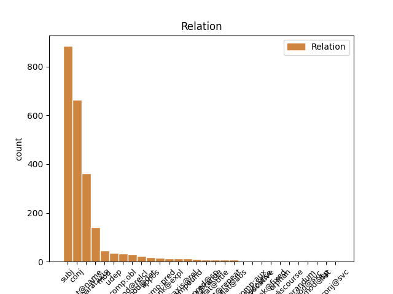
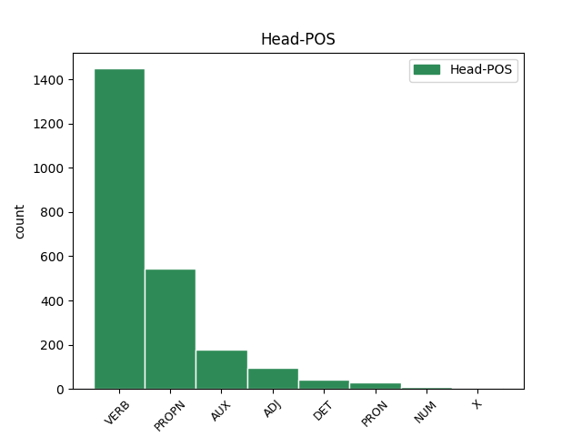
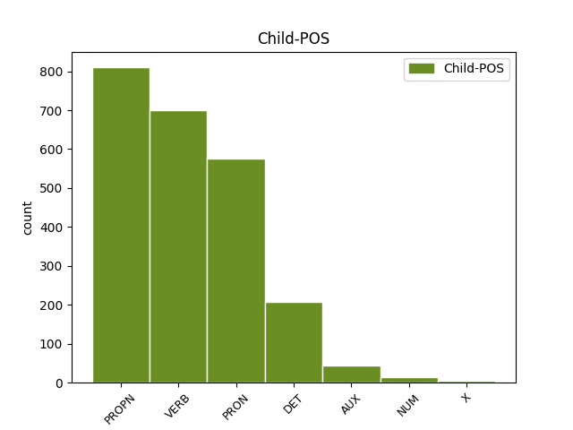

Distribution of features within this leaf



Agreement Rules sorted by frequency.
- When the dependent token is the conjunct(conj) of the head token, and the head token is VERB and the dependent token is VERB.
1 Показ _ _ _ _ 0 _ _ _
2 в _ _ _ _ 0 _ _ _
3 Україні _ _ _ _ 0 _ _ _
4 тривав тривати VERB Vmpis-sm Aspect=Imp|Gender=Masc|Mood=Ind|Number=Sing|Tense=Past|VerbForm=Fin 0 _ _ _
5 7 _ _ _ _ 0 _ _ _
6 тижнів _ _ _ _ 0 _ _ _
7 і _ _ _ _ 0 _ _ _
8 завершився завершитися VERB Vmeis-sm Aspect=Perf|Gender=Masc|Mood=Ind|Number=Sing|Tense=Past|VerbForm=Fin 4 conj _ Id=39px|LTranslit=zaveršytyśа|Translit=zaveršyvśа
9 8 _ _ _ _ 0 _ _ _
10 листопада _ _ _ _ 0 _ _ _
11 2015 _ _ _ _ 0 _ _ _
12 року _ _ _ _ 0 _ _ _
13 , _ _ _ _ 0 _ _ _
14 за _ _ _ _ 0 _ _ _
15 час _ _ _ _ 0 _ _ _
16 прокату _ _ _ _ 0 _ _ _
17 було _ _ _ _ 0 _ _ _
18 продано _ _ _ _ 0 _ _ _
19 442 509 _ _ _ _ 0 _ _ _
20 квитків _ _ _ _ 0 _ _ _
21 та _ _ _ _ 0 _ _ _
22 зібрано _ _ _ _ 0 _ _ _
23 29 037 892 _ _ _ _ 0 _ _ _
24 ₴ _ _ _ _ 0 _ _ _
25 , _ _ _ _ 0 _ _ _
26 або _ _ _ _ 0 _ _ _
27 ж _ _ _ _ 0 _ _ _
28 1,357,145 _ _ _ _ 0 _ _ _
29 $ _ _ _ _ 0 _ _ _
30 . _ _ _ _ 0 _ _ _
1 Під _ _ _ _ 0 _ _ _
2 час _ _ _ _ 0 _ _ _
3 показу _ _ _ _ 0 _ _ _
4 у _ _ _ _ 0 _ _ _
5 США _ _ _ _ 0 _ _ _
6 , _ _ _ _ 0 _ _ _
7 що _ _ _ _ 0 _ _ _
8 розпочався _ _ _ _ 0 _ _ _
9 18 _ _ _ _ 0 _ _ _
10 вересня _ _ _ _ 0 _ _ _
11 2015 _ _ _ _ 0 _ _ _
12 року _ _ _ _ 0 _ _ _
13 , _ _ _ _ 0 _ _ _
14 протягом _ _ _ _ 0 _ _ _
15 першого _ _ _ _ 0 _ _ _
16 тижня _ _ _ _ 0 _ _ _
17 фільм _ _ _ _ 0 _ _ _
18 був _ _ _ _ 0 _ _ _
19 показаний _ _ _ _ 0 _ _ _
20 у _ _ _ _ 0 _ _ _
21 545 _ _ _ _ 0 _ _ _
22 кінотеатрах _ _ _ _ 0 _ _ _
23 і _ _ _ _ 0 _ _ _
24 зібрав _ _ _ _ 0 _ _ _
25 7 222 035 _ _ _ _ 0 _ _ _
26 $ _ _ _ _ 0 _ _ _
27 , _ _ _ _ 0 _ _ _
28 що що PRON Pr--nnsnn Animacy=Inan|Case=Nom|Gender=Neut|Number=Sing|PronType=Rel 32 subj _ Id=39rd|LTranslit=ščo|Translit=ščo
29 на _ _ _ _ 0 _ _ _
30 той _ _ _ _ 0 _ _ _
31 час _ _ _ _ 0 _ _ _
32 дозволило дозволити VERB Vmeis-sn Aspect=Perf|Gender=Neut|Mood=Ind|Number=Sing|Tense=Past|VerbForm=Fin 0 _ _ _
33 йому _ _ _ _ 0 _ _ _
34 зайняти _ _ _ _ 0 _ _ _
35 5 _ _ _ _ 0 _ _ _
36 місце _ _ _ _ 0 _ _ _
37 серед _ _ _ _ 0 _ _ _
38 усіх _ _ _ _ 0 _ _ _
39 прем'єр _ _ _ _ 0 _ _ _
40 . _ _ _ _ 0 _ _ _
1 Особливі _ _ _ _ 0 _ _ _
2 слова _ _ _ _ 0 _ _ _
3 подяки _ _ _ _ 0 _ _ _
4 релігійним _ _ _ _ 0 _ _ _
5 громадам _ _ _ _ 0 _ _ _
6 м _ _ _ _ 0 _ _ _
7 . _ _ _ _ 0 _ _ _
8 Кіцмань _ _ _ _ 0 _ _ _
9 та _ _ _ _ 0 _ _ _
10 с _ _ _ _ 0 _ _ _
11 . _ _ _ _ 0 _ _ _
12 Мамаївці _ _ _ _ 0 _ _ _
13 та _ _ _ _ 0 _ _ _
14 їхнім _ _ _ _ 0 _ _ _
15 настоятелям _ _ _ _ 0 _ _ _
16 - _ _ _ _ 0 _ _ _
17 отцям _ _ _ _ 0 _ _ _
18 Юрію _ _ _ _ 0 _ _ _
19 ( _ _ _ _ 0 _ _ _
20 Кав'юку _ _ _ _ 0 _ _ _
21 ) _ _ _ _ 0 _ _ _
22 та _ _ _ _ 0 _ _ _
23 Івану Іван PROPN Npmsdy Animacy=Anim|Case=Dat|Gender=Masc|NameType=Giv|Number=Sing 0 _ _ _
24 ( _ _ _ _ 0 _ _ _
25 Марковському Марковський PROPN Npmsdy Animacy=Anim|Case=Dat|Gender=Masc|NameType=Sur|Number=Sing 23 flat@name _ Id=39f6|LTranslit=Markovśkyj|SpaceAfter=No|Translit=Markovśkomu
26 ) _ _ _ _ 0 _ _ _
27 , _ _ _ _ 0 _ _ _
28 без _ _ _ _ 0 _ _ _
29 яких _ _ _ _ 0 _ _ _
30 ця _ _ _ _ 0 _ _ _
31 поїздка _ _ _ _ 0 _ _ _
32 була _ _ _ _ 0 _ _ _
33 б _ _ _ _ 0 _ _ _
34 просто _ _ _ _ 0 _ _ _
35 неможливою _ _ _ _ 0 _ _ _
36 . _ _ _ _ 0 _ _ _
1 — _ _ _ _ 0 _ _ _
2 Зараз _ _ _ _ 0 _ _ _
3 буде _ _ _ _ 0 _ _ _
4 біда _ _ _ _ 0 _ _ _
5 , _ _ _ _ 0 _ _ _
6 — _ _ _ _ 0 _ _ _
7 казав казати VERB Vmpis-sm Aspect=Imp|Gender=Masc|Mood=Ind|Number=Sing|Tense=Past|VerbForm=Fin 0 _ _ _
8 Микола Микола PROPN Npmsny Animacy=Anim|Case=Nom|Gender=Masc|NameType=Giv|Number=Sing 7 subj _ Id=39cm|LTranslit=Mykola|Translit=Mykola
9 Максимові _ _ _ _ 0 _ _ _
10 . _ _ _ _ 0 _ _ _
1 Тому _ _ _ _ 0 _ _ _
2 ми _ _ _ _ 0 _ _ _
3 й _ _ _ _ 0 _ _ _
4 вирішили _ _ _ _ 0 _ _ _
5 надрукувати _ _ _ _ 0 _ _ _
6 цю _ _ _ _ 0 _ _ _
7 розвідку _ _ _ _ 0 _ _ _
8 О _ _ _ _ 0 _ _ _
9 . _ _ _ _ 0 _ _ _
10 Кандиби _ _ _ _ 0 _ _ _
11 , _ _ _ _ 0 _ _ _
12 яка який DET Pr--f-sna Case=Nom|Gender=Fem|Number=Sing|PronType=Rel 14 subj _ Id=2usn|LTranslit=jakyj|Translit=jaka
13 дотепер _ _ _ _ 0 _ _ _
14 лишилася лишитися VERB Vmeis-sf Aspect=Perf|Gender=Fem|Mood=Ind|Number=Sing|Tense=Past|VerbForm=Fin 0 _ _ _
15 в _ _ _ _ 0 _ _ _
16 рукопису _ _ _ _ 0 _ _ _
17 . _ _ _ _ 0 _ _ _
1 Особливі _ _ _ _ 0 _ _ _
2 слова _ _ _ _ 0 _ _ _
3 подяки _ _ _ _ 0 _ _ _
4 релігійним _ _ _ _ 0 _ _ _
5 громадам _ _ _ _ 0 _ _ _
6 м _ _ _ _ 0 _ _ _
7 . _ _ _ _ 0 _ _ _
8 Кіцмань _ _ _ _ 0 _ _ _
9 та _ _ _ _ 0 _ _ _
10 с _ _ _ _ 0 _ _ _
11 . _ _ _ _ 0 _ _ _
12 Мамаївці _ _ _ _ 0 _ _ _
13 та _ _ _ _ 0 _ _ _
14 їхнім _ _ _ _ 0 _ _ _
15 настоятелям _ _ _ _ 0 _ _ _
16 - _ _ _ _ 0 _ _ _
17 отцям _ _ _ _ 0 _ _ _
18 Юрію Юрій PROPN Npmsdy Animacy=Anim|Case=Dat|Gender=Masc|NameType=Giv|Number=Sing 0 _ _ _
19 ( _ _ _ _ 0 _ _ _
20 Кав'юку _ _ _ _ 0 _ _ _
21 ) _ _ _ _ 0 _ _ _
22 та _ _ _ _ 0 _ _ _
23 Івану Іван PROPN Npmsdy Animacy=Anim|Case=Dat|Gender=Masc|NameType=Giv|Number=Sing 18 conj _ Id=39f4|LTranslit=Ivan|Translit=Ivanu
24 ( _ _ _ _ 0 _ _ _
25 Марковському _ _ _ _ 0 _ _ _
26 ) _ _ _ _ 0 _ _ _
27 , _ _ _ _ 0 _ _ _
28 без _ _ _ _ 0 _ _ _
29 яких _ _ _ _ 0 _ _ _
30 ця _ _ _ _ 0 _ _ _
31 поїздка _ _ _ _ 0 _ _ _
32 була _ _ _ _ 0 _ _ _
33 б _ _ _ _ 0 _ _ _
34 просто _ _ _ _ 0 _ _ _
35 неможливою _ _ _ _ 0 _ _ _
36 . _ _ _ _ 0 _ _ _
1 Але _ _ _ _ 0 _ _ _
2 в _ _ _ _ 0 _ _ _
3 той _ _ _ _ 0 _ _ _
4 день _ _ _ _ 0 _ _ _
5 нескінченно _ _ _ _ 0 _ _ _
6 йшов _ _ _ _ 0 _ _ _
7 дощ _ _ _ _ 0 _ _ _
8 і _ _ _ _ 0 _ _ _
9 все все PRON Pg--nnsnn Animacy=Inan|Case=Nom|Gender=Neut|Number=Sing|PronType=Tot 10 subj _ Id=2pqg|LTranslit=vse|Translit=vse
10 було бути AUX Vapis-sn Aspect=Imp|Gender=Neut|Mood=Ind|Number=Sing|Tense=Past|VerbForm=Fin 0 _ _ _
11 мокре _ _ _ _ 0 _ _ _
12 і _ _ _ _ 0 _ _ _
13 не _ _ _ _ 0 _ _ _
14 припиняло _ _ _ _ 0 _ _ _
15 мокріти _ _ _ _ 0 _ _ _
16 знову _ _ _ _ 0 _ _ _
17 . _ _ _ _ 0 _ _ _
1 спочатку _ _ _ _ 0 _ _ _
2 розчепірила розчепірити VERB Vmeis-sf Aspect=Perf|Gender=Fem|Mood=Ind|Number=Sing|Tense=Past|VerbForm=Fin 0 _ _ _
3 ноги _ _ _ _ 0 _ _ _
4 , _ _ _ _ 0 _ _ _
5 потім _ _ _ _ 0 _ _ _
6 щось _ _ _ _ 0 _ _ _
7 в _ _ _ _ 0 _ _ _
8 кущах _ _ _ _ 0 _ _ _
9 робила робити VERB Vmpis-sf Aspect=Imp|Gender=Fem|Mood=Ind|Number=Sing|Tense=Past|VerbForm=Fin 2 parataxis _ Id=2oxl|LTranslit=robyty|SpaceAfter=No|Translit=robyla
10 , _ _ _ _ 0 _ _ _
11 потім _ _ _ _ 0 _ _ _
12 дитятко _ _ _ _ 0 _ _ _
13 дельфіна _ _ _ _ 0 _ _ _
14 .... _ _ _ _ 0 _ _ _
15 ??? _ _ _ _ 0 _ _ _
1 Адже _ _ _ _ 0 _ _ _
2 , _ _ _ _ 0 _ _ _
3 по _ _ _ _ 0 _ _ _
4 ідеї _ _ _ _ 0 _ _ _
5 , _ _ _ _ 0 _ _ _
6 такий такий DET Pd--m-sna Case=Nom|Gender=Masc|Number=Sing|PronType=Dem 7 mod@det _ Id=2axy|LTranslit=takyj|Translit=takyj
7 потужний потужний ADJ Afpmsnf Case=Nom|Degree=Pos|Gender=Masc|Number=Sing 0 _ _ _
8 суспільний _ _ _ _ 0 _ _ _
9 запит _ _ _ _ 0 _ _ _
10 мав _ _ _ _ 0 _ _ _
11 би _ _ _ _ 0 _ _ _
12 викинути _ _ _ _ 0 _ _ _
13 в _ _ _ _ 0 _ _ _
14 публічний _ _ _ _ 0 _ _ _
15 простір _ _ _ _ 0 _ _ _
16 ціле _ _ _ _ 0 _ _ _
17 нове _ _ _ _ 0 _ _ _
18 покоління _ _ _ _ 0 _ _ _
19 освітян _ _ _ _ 0 _ _ _
20 , _ _ _ _ 0 _ _ _
21 радих _ _ _ _ 0 _ _ _
22 - _ _ _ _ 0 _ _ _
23 радісіньких _ _ _ _ 0 _ _ _
24 , _ _ _ _ 0 _ _ _
25 що _ _ _ _ 0 _ _ _
26 їхні _ _ _ _ 0 _ _ _
27 знання _ _ _ _ 0 _ _ _
28 ( _ _ _ _ 0 _ _ _
29 і _ _ _ _ 0 _ _ _
30 хист _ _ _ _ 0 _ _ _
31 ними _ _ _ _ 0 _ _ _
32 ділитися _ _ _ _ 0 _ _ _
33 ! _ _ _ _ 0 _ _ _
34 ) _ _ _ _ 0 _ _ _
35 нарешті _ _ _ _ 0 _ _ _
36 знадобилися _ _ _ _ 0 _ _ _
37 країні _ _ _ _ 0 _ _ _
38 й _ _ _ _ 0 _ _ _
39 поза _ _ _ _ 0 _ _ _
40 стінами _ _ _ _ 0 _ _ _
41 їх _ _ _ _ 0 _ _ _
42 рідного _ _ _ _ 0 _ _ _
43 вишу _ _ _ _ 0 _ _ _
44 ! _ _ _ _ 0 _ _ _
1 А _ _ _ _ 0 _ _ _
2 ще _ _ _ _ 0 _ _ _
3 благородніша благородніший ADJ Afcfsns Case=Nom|Degree=Cmp|Gender=Fem|Number=Sing 0 _ _ _
4 вона вона PRON Pp-3f-snn Case=Nom|Gender=Fem|Number=Sing|Person=3|PronType=Prs 3 subj _ Id=32y4|LTranslit=vona|Translit=vona
5 тим _ _ _ _ 0 _ _ _
6 , _ _ _ _ 0 _ _ _
7 що _ _ _ _ 0 _ _ _
8 через _ _ _ _ 0 _ _ _
9 неї _ _ _ _ 0 _ _ _
10 і _ _ _ _ 0 _ _ _
11 завдяки _ _ _ _ 0 _ _ _
12 їй _ _ _ _ 0 _ _ _
13 можна _ _ _ _ 0 _ _ _
14 виявити _ _ _ _ 0 _ _ _
15 дуже _ _ _ _ 0 _ _ _
16 несимпатичну _ _ _ _ 0 _ _ _
17 породу _ _ _ _ 0 _ _ _
18 роду _ _ _ _ 0 _ _ _
19 людського _ _ _ _ 0 _ _ _
20 , _ _ _ _ 0 _ _ _
21 ту _ _ _ _ 0 _ _ _
22 породу _ _ _ _ 0 _ _ _
23 , _ _ _ _ 0 _ _ _
24 що _ _ _ _ 0 _ _ _
25 ганьбить _ _ _ _ 0 _ _ _
26 почесне _ _ _ _ 0 _ _ _
27 звання _ _ _ _ 0 _ _ _
28 охотника _ _ _ _ 0 _ _ _
29 - _ _ _ _ 0 _ _ _
30 людини _ _ _ _ 0 _ _ _
31 , _ _ _ _ 0 _ _ _
32 якій _ _ _ _ 0 _ _ _
33 є _ _ _ _ 0 _ _ _
34 назва _ _ _ _ 0 _ _ _
35 браконьєр _ _ _ _ 0 _ _ _
36 . _ _ _ _ 0 _ _ _
1 А _ _ _ _ 0 _ _ _
2 здається _ _ _ _ 0 _ _ _
3 у _ _ _ _ 0 _ _ _
4 97-му _ _ _ _ 0 _ _ _
5 Кохана _ _ _ _ 0 _ _ _
6 розбилася розбитися VERB Vmeis-sf Aspect=Perf|Gender=Fem|Mood=Ind|Number=Sing|Tense=Past|VerbForm=Fin 0 _ _ _
7 під _ _ _ _ 0 _ _ _
8 час _ _ _ _ 0 _ _ _
9 шторму _ _ _ _ 0 _ _ _
10 , _ _ _ _ 0 _ _ _
11 коли _ _ _ _ 0 _ _ _
12 стояла стояти VERB Vmpis-sf Aspect=Imp|Gender=Fem|Mood=Ind|Number=Sing|Tense=Past|VerbForm=Fin 6 mod _ Id=2uzp|LTranslit=stojaty|Translit=stojala
13 пришвартована _ _ _ _ 0 _ _ _
14 ... _ _ _ _ 0 _ _ _
1 Під _ _ _ _ 0 _ _ _
2 час _ _ _ _ 0 _ _ _
3 показу _ _ _ _ 0 _ _ _
4 у _ _ _ _ 0 _ _ _
5 США _ _ _ _ 0 _ _ _
6 , _ _ _ _ 0 _ _ _
7 що _ _ _ _ 0 _ _ _
8 розпочався _ _ _ _ 0 _ _ _
9 18 _ _ _ _ 0 _ _ _
10 вересня _ _ _ _ 0 _ _ _
11 2015 _ _ _ _ 0 _ _ _
12 року _ _ _ _ 0 _ _ _
13 , _ _ _ _ 0 _ _ _
14 протягом _ _ _ _ 0 _ _ _
15 першого _ _ _ _ 0 _ _ _
16 тижня _ _ _ _ 0 _ _ _
17 фільм _ _ _ _ 0 _ _ _
18 був бути AUX Vapis-sm Aspect=Imp|Gender=Masc|Mood=Ind|Number=Sing|Tense=Past|VerbForm=Fin 0 _ _ _
19 показаний _ _ _ _ 0 _ _ _
20 у _ _ _ _ 0 _ _ _
21 545 _ _ _ _ 0 _ _ _
22 кінотеатрах _ _ _ _ 0 _ _ _
23 і _ _ _ _ 0 _ _ _
24 зібрав зібрати VERB Vmeis-sm Aspect=Perf|Gender=Masc|Mood=Ind|Number=Sing|Tense=Past|VerbForm=Fin 18 conj _ Id=39r9|LTranslit=zibraty|Translit=zibrav
25 7 222 035 _ _ _ _ 0 _ _ _
26 $ _ _ _ _ 0 _ _ _
27 , _ _ _ _ 0 _ _ _
28 що _ _ _ _ 0 _ _ _
29 на _ _ _ _ 0 _ _ _
30 той _ _ _ _ 0 _ _ _
31 час _ _ _ _ 0 _ _ _
32 дозволило _ _ _ _ 0 _ _ _
33 йому _ _ _ _ 0 _ _ _
34 зайняти _ _ _ _ 0 _ _ _
35 5 _ _ _ _ 0 _ _ _
36 місце _ _ _ _ 0 _ _ _
37 серед _ _ _ _ 0 _ _ _
38 усіх _ _ _ _ 0 _ _ _
39 прем'єр _ _ _ _ 0 _ _ _
40 . _ _ _ _ 0 _ _ _
1 Засмалених _ _ _ _ 0 _ _ _
2 юнаків _ _ _ _ 0 _ _ _
3 у _ _ _ _ 0 _ _ _
4 синіх _ _ _ _ 0 _ _ _
5 і _ _ _ _ 0 _ _ _
6 червоних _ _ _ _ 0 _ _ _
7 штанцях _ _ _ _ 0 _ _ _
8 вона _ _ _ _ 0 _ _ _
9 дразнила _ _ _ _ 0 _ _ _
10 своїми _ _ _ _ 0 _ _ _
11 духовитими _ _ _ _ 0 _ _ _
12 десу _ _ _ _ 0 _ _ _
13 , _ _ _ _ 0 _ _ _
14 червоними _ _ _ _ 0 _ _ _
15 підв’язками _ _ _ _ 0 _ _ _
16 — _ _ _ _ 0 _ _ _
17 Вер Вер PROPN Npfsny Animacy=Anim|Case=Nom|Gender=Fem|NameType=Giv|Number=Sing|Uninflect=Yes 18 subj _ Id=24e8|LTranslit=Ver|Translit=Ver
18 була бути AUX Vapis-sf Aspect=Imp|Gender=Fem|Mood=Ind|Number=Sing|Tense=Past|VerbForm=Fin 0 _ _ _
19 брюнетка _ _ _ _ 0 _ _ _
20 — _ _ _ _ 0 _ _ _
21 і _ _ _ _ 0 _ _ _
22 прозорістю _ _ _ _ 0 _ _ _
23 довгих _ _ _ _ 0 _ _ _
24 чорних _ _ _ _ 0 _ _ _
25 панчіх _ _ _ _ 0 _ _ _
26 . _ _ _ _ 0 _ _ _
1 У _ _ _ _ 0 _ _ _
2 середньовічній _ _ _ _ 0 _ _ _
3 Європі Європа PROPN Npfsln Animacy=Inan|Case=Loc|Gender=Fem|Number=Sing 0 _ _ _
4 , _ _ _ _ 0 _ _ _
5 де _ _ _ _ 0 _ _ _
6 панувала панувати VERB Vmpis-sf Aspect=Imp|Gender=Fem|Mood=Ind|Number=Sing|Tense=Past|VerbForm=Fin 3 mod@relcl _ Id=2qgl|LTranslit=panuvaty|Translit=panuvala
7 християнська _ _ _ _ 0 _ _ _
8 мораль _ _ _ _ 0 _ _ _
9 , _ _ _ _ 0 _ _ _
10 купання _ _ _ _ 0 _ _ _
11 довгий _ _ _ _ 0 _ _ _
12 час _ _ _ _ 0 _ _ _
13 не _ _ _ _ 0 _ _ _
14 дозволялося _ _ _ _ 0 _ _ _
15 взагалі _ _ _ _ 0 _ _ _
16 , _ _ _ _ 0 _ _ _
17 бо _ _ _ _ 0 _ _ _
18 це _ _ _ _ 0 _ _ _
19 суперечило _ _ _ _ 0 _ _ _
20 християнським _ _ _ _ 0 _ _ _
21 поглядам _ _ _ _ 0 _ _ _
22 на _ _ _ _ 0 _ _ _
23 тіло _ _ _ _ 0 _ _ _
24 та _ _ _ _ 0 _ _ _
25 гігієну _ _ _ _ 0 _ _ _
26 . _ _ _ _ 0 _ _ _
1 І _ _ _ _ 0 _ _ _
2 сам сам DET Px--m-sna Case=Nom|Gender=Masc|Number=Sing|PronType=Prs|Reflex=Yes 4 udep _ Id=2cwu|LTranslit=sam|Translit=sam
3 Тарас _ _ _ _ 0 _ _ _
4 писав писати VERB Vmpis-sm Aspect=Imp|Gender=Masc|Mood=Ind|Number=Sing|Tense=Past|VerbForm=Fin 0 _ _ _
5 , _ _ _ _ 0 _ _ _
6 що _ _ _ _ 0 _ _ _
7 народився _ _ _ _ 0 _ _ _
8 в _ _ _ _ 0 _ _ _
9 Керелівці _ _ _ _ 0 _ _ _
10 . _ _ _ _ 0 _ _ _
1 Що _ _ _ _ 0 _ _ _
2 , _ _ _ _ 0 _ _ _
3 наприклад _ _ _ _ 0 _ _ _
4 , _ _ _ _ 0 _ _ _
5 мила _ _ _ _ 0 _ _ _
6 й _ _ _ _ 0 _ _ _
7 безпосередня _ _ _ _ 0 _ _ _
8 журналістка _ _ _ _ 0 _ _ _
9 , _ _ _ _ 0 _ _ _
10 яка який DET Pr--f-sna Case=Nom|Gender=Fem|Number=Sing|PronType=Rel 14 subj _ Id=2b5f|LTranslit=jakyj|Translit=jaka
11 під _ _ _ _ 0 _ _ _
12 час _ _ _ _ 0 _ _ _
13 Майдану _ _ _ _ 0 _ _ _
14 була бути AUX Vapis-sf Aspect=Imp|Gender=Fem|Mood=Ind|Number=Sing|Tense=Past|VerbForm=Fin 0 _ _ _
15 ляпнула _ _ _ _ 0 _ _ _
16 мені _ _ _ _ 0 _ _ _
17 в _ _ _ _ 0 _ _ _
18 ефірі _ _ _ _ 0 _ _ _
19 " _ _ _ _ 0 _ _ _
20 Громадського _ _ _ _ 0 _ _ _
21 " _ _ _ _ 0 _ _ _
22 : _ _ _ _ 0 _ _ _
23 " _ _ _ _ 0 _ _ _
24 Шевельов _ _ _ _ 0 _ _ _
25 ? _ _ _ _ 0 _ _ _
26 Так _ _ _ _ 0 _ _ _
27 він _ _ _ _ 0 _ _ _
28 же _ _ _ _ 0 _ _ _
29 нацистський _ _ _ _ 0 _ _ _
30 колаборант _ _ _ _ 0 _ _ _
31 ! _ _ _ _ 0 _ _ _
32 " _ _ _ _ 0 _ _ _
33 , _ _ _ _ 0 _ _ _
34 - _ _ _ _ 0 _ _ _
35 не _ _ _ _ 0 _ _ _
36 " _ _ _ _ 0 _ _ _
37 темник _ _ _ _ 0 _ _ _
38 " _ _ _ _ 0 _ _ _
39 від _ _ _ _ 0 _ _ _
40 ФСБ _ _ _ _ 0 _ _ _
41 слідом _ _ _ _ 0 _ _ _
42 за _ _ _ _ 0 _ _ _
43 Добкіним _ _ _ _ 0 _ _ _
44 озвучувала _ _ _ _ 0 _ _ _
45 , _ _ _ _ 0 _ _ _
46 а _ _ _ _ 0 _ _ _
47 просто _ _ _ _ 0 _ _ _
48 " _ _ _ _ 0 _ _ _
49 на _ _ _ _ 0 _ _ _
50 автоматі _ _ _ _ 0 _ _ _
51 " _ _ _ _ 0 _ _ _
52 , _ _ _ _ 0 _ _ _
53 як _ _ _ _ 0 _ _ _
54 німфа _ _ _ _ 0 _ _ _
55 Ехо _ _ _ _ 0 _ _ _
56 , _ _ _ _ 0 _ _ _
57 повторила _ _ _ _ 0 _ _ _
58 те _ _ _ _ 0 _ _ _
59 , _ _ _ _ 0 _ _ _
60 що _ _ _ _ 0 _ _ _
61 найголосніше _ _ _ _ 0 _ _ _
62 в _ _ _ _ 0 _ _ _
63 ефірах _ _ _ _ 0 _ _ _
64 про _ _ _ _ 0 _ _ _
65 Шевельова _ _ _ _ 0 _ _ _
66 звучало _ _ _ _ 0 _ _ _
67 ( _ _ _ _ 0 _ _ _
68 чула _ _ _ _ 0 _ _ _
69 дзвін _ _ _ _ 0 _ _ _
70 ! _ _ _ _ 0 _ _ _
71 ) _ _ _ _ 0 _ _ _
72 . _ _ _ _ 0 _ _ _
1 Співрозмовники _ _ _ _ 0 _ _ _
2 УП _ _ _ _ 0 _ _ _
3 , _ _ _ _ 0 _ _ _
4 знайомі _ _ _ _ 0 _ _ _
5 з _ _ _ _ 0 _ _ _
6 матеріалами _ _ _ _ 0 _ _ _
7 кримінального _ _ _ _ 0 _ _ _
8 провадження _ _ _ _ 0 _ _ _
9 , _ _ _ _ 0 _ _ _
10 звертають _ _ _ _ 0 _ _ _
11 увагу _ _ _ _ 0 _ _ _
12 на _ _ _ _ 0 _ _ _
13 те _ _ _ _ 0 _ _ _
14 , _ _ _ _ 0 _ _ _
15 що _ _ _ _ 0 _ _ _
16 єдиний єдиний ADJ Ao-msnf Case=Nom|Gender=Masc|Number=Sing 0 _ _ _
17 із _ _ _ _ 0 _ _ _
18 затриманих _ _ _ _ 0 _ _ _
19 , _ _ _ _ 0 _ _ _
20 хто _ _ _ _ 0 _ _ _
21 мав _ _ _ _ 0 _ _ _
22 відношення _ _ _ _ 0 _ _ _
23 до _ _ _ _ 0 _ _ _
24 МВС _ _ _ _ 0 _ _ _
25 – _ _ _ _ 0 _ _ _
26 Павло Павло PROPN Npmsny Animacy=Anim|Case=Nom|Gender=Masc|NameType=Giv|Number=Sing 16 subj _ Id=2awo|LTranslit=Pavlo|Translit=Pavlo
27 Полчанов _ _ _ _ 0 _ _ _
28 . _ _ _ _ 0 _ _ _
1 До _ _ _ _ 0 _ _ _
2 речі _ _ _ _ 0 _ _ _
3 буде _ _ _ _ 0 _ _ _
4 запримітити _ _ _ _ 0 _ _ _
5 , _ _ _ _ 0 _ _ _
6 що _ _ _ _ 0 _ _ _
7 мр _ _ _ _ 0 _ _ _
8 . _ _ _ _ 0 _ _ _
9 Віллі _ _ _ _ 0 _ _ _
10 Морріс _ _ _ _ 0 _ _ _
11 мав мати VERB Vmpis-sm Aspect=Imp|Gender=Masc|Mood=Ind|Number=Sing|Tense=Past|VerbForm=Fin 0 _ _ _
12 ресторан _ _ _ _ 0 _ _ _
13 при _ _ _ _ 0 _ _ _
14 Вестчестрі _ _ _ _ 0 _ _ _
15 - _ _ _ _ 0 _ _ _
16 авеню _ _ _ _ 0 _ _ _
17 , _ _ _ _ 0 _ _ _
18 а _ _ _ _ 0 _ _ _
19 мр _ _ _ _ 0 _ _ _
20 . _ _ _ _ 0 _ _ _
21 Фред _ _ _ _ 0 _ _ _
22 Кетлінг _ _ _ _ 0 _ _ _
23 був бути AUX Vapis-sm Aspect=Imp|Gender=Masc|Mood=Ind|Number=Sing|Tense=Past|VerbForm=Fin 11 conj _ Id=33ff|LTranslit=buty|Translit=buv
24 босом _ _ _ _ 0 _ _ _
25 у _ _ _ _ 0 _ _ _
26 фабриці _ _ _ _ 0 _ _ _
27 яринних _ _ _ _ 0 _ _ _
28 консерв _ _ _ _ 0 _ _ _
29 на _ _ _ _ 0 _ _ _
30 10-му _ _ _ _ 0 _ _ _
31 стріті _ _ _ _ 0 _ _ _
32 . _ _ _ _ 0 _ _ _
1 Головні _ _ _ _ 0 _ _ _
2 ролі _ _ _ _ 0 _ _ _
3 у _ _ _ _ 0 _ _ _
4 стрічці _ _ _ _ 0 _ _ _
5 виконують _ _ _ _ 0 _ _ _
6 Руні _ _ _ _ 0 _ _ _
7 Мара _ _ _ _ 0 _ _ _
8 ( _ _ _ _ 0 _ _ _
9 продавчиня _ _ _ _ 0 _ _ _
10 ) _ _ _ _ 0 _ _ _
11 і _ _ _ _ 0 _ _ _
12 Кейт Кейт PROPN Npfsny Animacy=Anim|Case=Nom|Gender=Fem|NameType=Giv|Number=Sing|Uninflect=Yes 0 _ _ _
13 Бланшет _ _ _ _ 0 _ _ _
14 ( _ _ _ _ 0 _ _ _
15 Керол Керол PROPN Npfsny Animacy=Anim|Case=Nom|Gender=Fem|NameType=Giv|Number=Sing|Uninflect=Yes 12 appos _ Id=2dj5|LTranslit=Kerol|SpaceAfter=No|Translit=Kerol
16 ) _ _ _ _ 0 _ _ _
17 . _ _ _ _ 0 _ _ _
1 Отакий отакий DET Pd--m-sna Case=Nom|Gender=Masc|Number=Sing|PronType=Dem 2 comp:pred _ Id=3408|LTranslit=otakyj|Translit=Otakyj
2 був бути AUX Vapis-sm Aspect=Imp|Gender=Masc|Mood=Ind|Number=Sing|Tense=Past|VerbForm=Fin 0 _ _ _
3 у _ _ _ _ 0 _ _ _
4 мене _ _ _ _ 0 _ _ _
5 останній _ _ _ _ 0 _ _ _
6 день _ _ _ _ 0 _ _ _
7 літа _ _ _ _ 0 _ _ _
8 . _ _ _ _ 0 _ _ _
1 Та _ _ _ _ 0 _ _ _
2 починаючи _ _ _ _ 0 _ _ _
3 з _ _ _ _ 0 _ _ _
4 середини _ _ _ _ 0 _ _ _
5 XI _ _ _ _ 0 _ _ _
6 ст _ _ _ _ 0 _ _ _
7 . _ _ _ _ 0 _ _ _
8 з’являється _ _ _ _ 0 _ _ _
9 важливе _ _ _ _ 0 _ _ _
10 додаткове _ _ _ _ 0 _ _ _
11 джерело _ _ _ _ 0 _ _ _
12 даних _ _ _ _ 0 _ _ _
13 — _ _ _ _ 0 _ _ _
14 писемні _ _ _ _ 0 _ _ _
15 пам’ятки _ _ _ _ 0 _ _ _
16 , _ _ _ _ 0 _ _ _
17 що _ _ _ _ 0 _ _ _
18 дозволяють _ _ _ _ 0 _ _ _
19 з’ясувати _ _ _ _ 0 _ _ _
20 , _ _ _ _ 0 _ _ _
21 коли _ _ _ _ 0 _ _ _
22 саме _ _ _ _ 0 _ _ _
23 відбулася _ _ _ _ 0 _ _ _
24 та той DET Pd--f-sna Case=Nom|Gender=Fem|Number=Sing|PronType=Dem 0 _ _ _
25 чи _ _ _ _ 0 _ _ _
26 та той DET Pd--f-sna Case=Nom|Gender=Fem|Number=Sing|PronType=Dem 24 conj _ Id=1at3|LTranslit=toj|Translit=ta
27 звукозміна _ _ _ _ 0 _ _ _
28 , _ _ _ _ 0 _ _ _
29 а _ _ _ _ 0 _ _ _
30 часто _ _ _ _ 0 _ _ _
31 й _ _ _ _ 0 _ _ _
32 визначити _ _ _ _ 0 _ _ _
33 проміжні _ _ _ _ 0 _ _ _
34 стадії _ _ _ _ 0 _ _ _
35 розвитку _ _ _ _ 0 _ _ _
36 , _ _ _ _ 0 _ _ _
37 які _ _ _ _ 0 _ _ _
38 залишилися _ _ _ _ 0 _ _ _
39 б _ _ _ _ 0 _ _ _
40 непоміченими _ _ _ _ 0 _ _ _
41 при _ _ _ _ 0 _ _ _
42 неминуче _ _ _ _ 0 _ _ _
43 надто _ _ _ _ 0 _ _ _
44 узагальнюючому _ _ _ _ 0 _ _ _
45 порівняльному _ _ _ _ 0 _ _ _
46 підході _ _ _ _ 0 _ _ _
47 . _ _ _ _ 0 _ _ _
1 Плакати _ _ _ _ 0 _ _ _
2 й _ _ _ _ 0 _ _ _
3 стрічки _ _ _ _ 0 _ _ _
4 , _ _ _ _ 0 _ _ _
5 що _ _ _ _ 0 _ _ _
6 повишивали _ _ _ _ 0 _ _ _
7 дівчата _ _ _ _ 0 _ _ _
8 , _ _ _ _ 0 _ _ _
9 сховані _ _ _ _ 0 _ _ _
10 у _ _ _ _ 0 _ _ _
11 великій _ _ _ _ 0 _ _ _
12 шафі _ _ _ _ 0 _ _ _
13 , _ _ _ _ 0 _ _ _
14 ключі _ _ _ _ 0 _ _ _
15 я _ _ _ _ 0 _ _ _
16 віддав віддати VERB Vmeis-sm Aspect=Perf|Gender=Masc|Mood=Ind|Number=Sing|Tense=Past|VerbForm=Fin 0 _ _ _
17 Петрові Петро PROPN Npmsdy Animacy=Anim|Case=Dat|Gender=Masc|NameType=Giv|Number=Sing 16 comp:obl _ Id=26u5|LTranslit=Petro|SpaceAfter=No|Translit=Petrovi
18 . _ _ _ _ 0 _ _ _
1 Мені _ _ _ _ 0 _ _ _
2 щиро _ _ _ _ 0 _ _ _
3 жаль _ _ _ _ 0 _ _ _
4 - _ _ _ _ 0 _ _ _
5 я _ _ _ _ 0 _ _ _
6 любила _ _ _ _ 0 _ _ _
7 Америку _ _ _ _ 0 _ _ _
8 ( _ _ _ _ 0 _ _ _
9 зараз _ _ _ _ 0 _ _ _
10 поставлю _ _ _ _ 0 _ _ _
11 собі _ _ _ _ 0 _ _ _
12 New _ _ _ _ 0 _ _ _
13 York _ _ _ _ 0 _ _ _
14 , _ _ _ _ 0 _ _ _
15 NY _ _ _ _ 0 _ _ _
16 у _ _ _ _ 0 _ _ _
17 виконанні _ _ _ _ 0 _ _ _
18 Сестер _ _ _ _ 0 _ _ _
19 Тельнюк _ _ _ _ 0 _ _ _
20 : _ _ _ _ 0 _ _ _
21 попрощатися _ _ _ _ 0 _ _ _
22 з _ _ _ _ 0 _ _ _
23 тою той DET Pd--f-sia Case=Ins|Gender=Fem|Number=Sing|PronType=Dem 0 _ _ _
24 , _ _ _ _ 0 _ _ _
25 яку _ _ _ _ 0 _ _ _
26 любила любити VERB Vmpis-sf Aspect=Imp|Gender=Fem|Mood=Ind|Number=Sing|Tense=Past|VerbForm=Fin 23 mod@relcl _ Id=1pym|LTranslit=ľubyty|SpaceAfter=No|Translit=ľubyla
27 ) _ _ _ _ 0 _ _ _
28 . _ _ _ _ 0 _ _ _
1 Оба _ _ _ _ 0 _ _ _
2 джентльмени _ _ _ _ 0 _ _ _
3 , _ _ _ _ 0 _ _ _
4 як _ _ _ _ 0 _ _ _
5 добрі _ _ _ _ 0 _ _ _
6 знайомі _ _ _ _ 0 _ _ _
7 , _ _ _ _ 0 _ _ _
8 ліниво _ _ _ _ 0 _ _ _
9 доторкнулися _ _ _ _ 0 _ _ _
10 пальцями _ _ _ _ 0 _ _ _
11 однакових _ _ _ _ 0 _ _ _
12 плескатих _ _ _ _ 0 _ _ _
13 солом'яних _ _ _ _ 0 _ _ _
14 брилів _ _ _ _ 0 _ _ _
15 з _ _ _ _ 0 _ _ _
16 однаковими _ _ _ _ 0 _ _ _
17 чорними _ _ _ _ 0 _ _ _
18 стяжками _ _ _ _ 0 _ _ _
19 та _ _ _ _ 0 _ _ _
20 гукнули _ _ _ _ 0 _ _ _
21 один один DET Pi--m-sna Case=Nom|Gender=Masc|Number=Sing|PronType=Ind 0 _ _ _
22 другому другий DET Pi--m-sda Case=Dat|Gender=Masc|Number=Sing|PronType=Ind 21 flat@abs _ Id=33gc|LTranslit=druhyj|Translit=druhomu
23 просто _ _ _ _ 0 _ _ _
24 в _ _ _ _ 0 _ _ _
25 ніс _ _ _ _ 0 _ _ _
26 : _ _ _ _ 0 _ _ _
1 Це це PRON Pd--nnsnn Animacy=Inan|Case=Nom|Gender=Neut|Number=Sing|PronType=Dem 4 subj _ Id=1saz|LTranslit=ce|Translit=Ce
2 явно _ _ _ _ 0 _ _ _
3 не _ _ _ _ 0 _ _ _
4 все все PRON Pg--nnsnn Animacy=Inan|Case=Nom|Gender=Neut|Number=Sing|PronType=Tot 0 _ _ _
5 . _ _ _ _ 0 _ _ _
1 Навіщо _ _ _ _ 0 _ _ _
2 співати _ _ _ _ 0 _ _ _
3 таку _ _ _ _ 0 _ _ _
4 пісню _ _ _ _ 0 _ _ _
5 , _ _ _ _ 0 _ _ _
6 яка який DET Pr--f-sna Case=Nom|Gender=Fem|Number=Sing|PronType=Rel 8 subj _ Id=2p0q|LTranslit=jakyj|Translit=jaka
7 відверто _ _ _ _ 0 _ _ _
8 слабка слабкий ADJ Afpfsns Case=Nom|Degree=Pos|Gender=Fem|Number=Sing 0 _ _ _
9 , _ _ _ _ 0 _ _ _
10 і _ _ _ _ 0 _ _ _
11 бажати _ _ _ _ 0 _ _ _
12 собі _ _ _ _ 0 _ _ _
13 кліп _ _ _ _ 0 _ _ _
14 як _ _ _ _ 0 _ _ _
15 у _ _ _ _ 0 _ _ _
16 Ріани _ _ _ _ 0 _ _ _
17 , _ _ _ _ 0 _ _ _
18 і _ _ _ _ 0 _ _ _
19 це _ _ _ _ 0 _ _ _
20 не _ _ _ _ 0 _ _ _
21 тільки _ _ _ _ 0 _ _ _
22 стосується _ _ _ _ 0 _ _ _
23 Яремчук _ _ _ _ 0 _ _ _
24 . _ _ _ _ 0 _ _ _
1 « _ _ _ _ 0 _ _ _
2 Знищений _ _ _ _ 0 _ _ _
3 сьогодні _ _ _ _ 0 _ _ _
4 командир _ _ _ _ 0 _ _ _
5 1-го _ _ _ _ 0 _ _ _
6 батальйону _ _ _ _ 0 _ _ _
7 100-ї _ _ _ _ 0 _ _ _
8 бригади _ _ _ _ 0 _ _ _
9 Республіканської _ _ _ _ 0 _ _ _
10 гвардії _ _ _ _ 0 _ _ _
11 " _ _ _ _ 0 _ _ _
12 ДНР _ _ _ _ 0 _ _ _
13 " _ _ _ _ 0 _ _ _
14 позивний _ _ _ _ 0 _ _ _
15 " _ _ _ _ 0 _ _ _
16 Грек _ _ _ _ 0 _ _ _
17 " _ _ _ _ 0 _ _ _
18 , _ _ _ _ 0 _ _ _
19 був бути AUX Vapis-sm Aspect=Imp|Gender=Masc|Mood=Ind|Number=Sing|Tense=Past|VerbForm=Fin 0 _ _ _
20 одним _ _ _ _ 0 _ _ _
21 із _ _ _ _ 0 _ _ _
22 найдосвідченіших _ _ _ _ 0 _ _ _
23 польових _ _ _ _ 0 _ _ _
24 командирів _ _ _ _ 0 _ _ _
25 бойовиків _ _ _ _ 0 _ _ _
26 , _ _ _ _ 0 _ _ _
27 який _ _ _ _ 0 _ _ _
28 воював _ _ _ _ 0 _ _ _
29 починаючи _ _ _ _ 0 _ _ _
30 зі _ _ _ _ 0 _ _ _
31 Слов'янська _ _ _ _ 0 _ _ _
32 , _ _ _ _ 0 _ _ _
33 брав _ _ _ _ 0 _ _ _
34 участь _ _ _ _ 0 _ _ _
35 в _ _ _ _ 0 _ _ _
36 боях _ _ _ _ 0 _ _ _
37 на _ _ _ _ 0 _ _ _
38 кордоні _ _ _ _ 0 _ _ _
39 в _ _ _ _ 0 _ _ _
40 секторі _ _ _ _ 0 _ _ _
41 " _ _ _ _ 0 _ _ _
42 Д _ _ _ _ 0 _ _ _
43 " _ _ _ _ 0 _ _ _
44 починаючи _ _ _ _ 0 _ _ _
45 з _ _ _ _ 0 _ _ _
46 червня _ _ _ _ 0 _ _ _
47 2014 _ _ _ _ 0 _ _ _
48 го _ _ _ _ 0 _ _ _
49 , _ _ _ _ 0 _ _ _
50 в _ _ _ _ 0 _ _ _
51 районі _ _ _ _ 0 _ _ _
52 Маринівки _ _ _ _ 0 _ _ _
53 , _ _ _ _ 0 _ _ _
54 Сніжного _ _ _ _ 0 _ _ _
55 , _ _ _ _ 0 _ _ _
56 Саур-Могили _ _ _ _ 0 _ _ _
57 , _ _ _ _ 0 _ _ _
58 коли _ _ _ _ 0 _ _ _
59 ряд _ _ _ _ 0 _ _ _
60 наших _ _ _ _ 0 _ _ _
61 підрозділів _ _ _ _ 0 _ _ _
62 , _ _ _ _ 0 _ _ _
63 в _ _ _ _ 0 _ _ _
64 тому _ _ _ _ 0 _ _ _
65 числі _ _ _ _ 0 _ _ _
66 72-ї _ _ _ _ 0 _ _ _
67 бригади _ _ _ _ 0 _ _ _
68 , _ _ _ _ 0 _ _ _
69 були _ _ _ _ 0 _ _ _
70 оточені _ _ _ _ 0 _ _ _
71 російською _ _ _ _ 0 _ _ _
72 регулярною _ _ _ _ 0 _ _ _
73 армією _ _ _ _ 0 _ _ _
74 і _ _ _ _ 0 _ _ _
75 загонами _ _ _ _ 0 _ _ _
76 найманців _ _ _ _ 0 _ _ _
77 , _ _ _ _ 0 _ _ _
78 також _ _ _ _ 0 _ _ _
79 брав _ _ _ _ 0 _ _ _
80 участь _ _ _ _ 0 _ _ _
81 у _ _ _ _ 0 _ _ _
82 боях _ _ _ _ 0 _ _ _
83 за _ _ _ _ 0 _ _ _
84 Ясинувату _ _ _ _ 0 _ _ _
85 в _ _ _ _ 0 _ _ _
86 серпні _ _ _ _ 0 _ _ _
87 2014-го _ _ _ _ 0 _ _ _
88 , _ _ _ _ 0 _ _ _
89 командував _ _ _ _ 0 _ _ _
90 спецпідрозділом _ _ _ _ 0 _ _ _
91 " _ _ _ _ 0 _ _ _
92 Південь _ _ _ _ 0 _ _ _
93 " _ _ _ _ 0 _ _ _
94 бригади _ _ _ _ 0 _ _ _
95 найманців _ _ _ _ 0 _ _ _
96 " _ _ _ _ 0 _ _ _
97 Схід _ _ _ _ 0 _ _ _
98 " _ _ _ _ 0 _ _ _
99 , _ _ _ _ 0 _ _ _
100 а _ _ _ _ 0 _ _ _
101 після _ _ _ _ 0 _ _ _
102 організації _ _ _ _ 0 _ _ _
103 російським _ _ _ _ 0 _ _ _
104 командуванням _ _ _ _ 0 _ _ _
105 окупаційної _ _ _ _ 0 _ _ _
106 армії _ _ _ _ 0 _ _ _
107 , _ _ _ _ 0 _ _ _
108 очолив _ _ _ _ 0 _ _ _
109 1-й _ _ _ _ 0 _ _ _
110 батальйон _ _ _ _ 0 _ _ _
111 Республіканської _ _ _ _ 0 _ _ _
112 гвардії _ _ _ _ 0 _ _ _
113 і _ _ _ _ 0 _ _ _
114 вже _ _ _ _ 0 _ _ _
115 два _ _ _ _ 0 _ _ _
116 роки _ _ _ _ 0 _ _ _
117 веде _ _ _ _ 0 _ _ _
118 бої _ _ _ _ 0 _ _ _
119 під _ _ _ _ 0 _ _ _
120 Донецьком _ _ _ _ 0 _ _ _
121 » _ _ _ _ 0 _ _ _
122 , _ _ _ _ 0 _ _ _
123 - _ _ _ _ 0 _ _ _
124 розповів розповісти VERB Vmeis-sm Aspect=Perf|Gender=Masc|Mood=Ind|Number=Sing|Tense=Past|VerbForm=Fin 19 parataxis _ Id=1p1i|LTranslit=rozpovisty|Translit=rozpoviv
125 Бутусов _ _ _ _ 0 _ _ _
126 . _ _ _ _ 0 _ _ _
1 Маю _ _ _ _ 0 _ _ _
2 зізнатися _ _ _ _ 0 _ _ _
3 , _ _ _ _ 0 _ _ _
4 що _ _ _ _ 0 _ _ _
5 коли _ _ _ _ 0 _ _ _
6 я _ _ _ _ 0 _ _ _
7 почула _ _ _ _ 0 _ _ _
8 цю _ _ _ _ 0 _ _ _
9 фразу _ _ _ _ 0 _ _ _
10 вперше _ _ _ _ 0 _ _ _
11 ( _ _ _ _ 0 _ _ _
12 років _ _ _ _ 0 _ _ _
13 в _ _ _ _ 0 _ _ _
14 15 _ _ _ _ 0 _ _ _
15 ) _ _ _ _ 0 _ _ _
16 , _ _ _ _ 0 _ _ _
17 я _ _ _ _ 0 _ _ _
18 надавала надавати VERB Vmpis-sf Aspect=Imp|Gender=Fem|Mood=Ind|Number=Sing|Tense=Past|VerbForm=Fin 0 _ _ _
19 їй вона PRON Pp-3f-sdn Case=Dat|Gender=Fem|Number=Sing|Person=3|PronType=Prs 18 comp:obl _ Id=1svo|LTranslit=vona|Translit=jij
20 зовсім _ _ _ _ 0 _ _ _
21 іншого _ _ _ _ 0 _ _ _
22 значення _ _ _ _ 0 _ _ _
23 . _ _ _ _ 0 _ _ _
1 Розвиток _ _ _ _ 0 _ _ _
2 залізниці _ _ _ _ 0 _ _ _
3 на _ _ _ _ 0 _ _ _
4 початку _ _ _ _ 0 _ _ _
5 XIX _ _ _ _ 0 _ _ _
6 ст _ _ _ _ 0 _ _ _
7 . _ _ _ _ 0 _ _ _
8 зробив _ _ _ _ 0 _ _ _
9 доступними _ _ _ _ 0 _ _ _
10 для _ _ _ _ 0 _ _ _
11 багатьох _ _ _ _ 0 _ _ _
12 людей _ _ _ _ 0 _ _ _
13 поїздки _ _ _ _ 0 _ _ _
14 на _ _ _ _ 0 _ _ _
15 морські _ _ _ _ 0 _ _ _
16 узбережжя _ _ _ _ 0 _ _ _
17 , _ _ _ _ 0 _ _ _
18 де _ _ _ _ 0 _ _ _
19 були _ _ _ _ 0 _ _ _
20 громадські _ _ _ _ 0 _ _ _
21 курорти _ _ _ _ 0 _ _ _
22 Європи _ _ _ _ 0 _ _ _
23 , _ _ _ _ 0 _ _ _
24 а _ _ _ _ 0 _ _ _
25 також _ _ _ _ 0 _ _ _
26 до _ _ _ _ 0 _ _ _
27 зон _ _ _ _ 0 _ _ _
28 відпочинку _ _ _ _ 0 _ _ _
29 з _ _ _ _ 0 _ _ _
30 термальними _ _ _ _ 0 _ _ _
31 водами _ _ _ _ 0 _ _ _
32 в _ _ _ _ 0 _ _ _
33 Баден Баден PROPN Npmsnn Animacy=Inan|Case=Nom|Gender=Masc|Number=Sing 35 compound _ Id=2qni|LTranslit=Baden|SpaceAfter=No|Translit=Baden
34 - _ _ _ _ 0 _ _ _
35 Бадені Баден PROPN Npmsln Animacy=Inan|Case=Loc|Gender=Masc|Number=Sing 0 _ _ _
36 . _ _ _ _ 0 _ _ _
1 Коли _ _ _ _ 0 _ _ _
2 взяти _ _ _ _ 0 _ _ _
3 до _ _ _ _ 0 _ _ _
4 уваги _ _ _ _ 0 _ _ _
5 різницю _ _ _ _ 0 _ _ _
6 ВВП _ _ _ _ 0 _ _ _
7 на _ _ _ _ 0 _ _ _
8 особу _ _ _ _ 0 _ _ _
9 за _ _ _ _ 0 _ _ _
10 номіналом _ _ _ _ 0 _ _ _
11 та _ _ _ _ 0 _ _ _
12 ПКС _ _ _ _ 0 _ _ _
13 у _ _ _ _ 0 _ _ _
14 наших _ _ _ _ 0 _ _ _
15 країнах _ _ _ _ 0 _ _ _
16 , _ _ _ _ 0 _ _ _
17 яка _ _ _ _ 0 _ _ _
18 дає _ _ _ _ 0 _ _ _
19 коефіцієнт _ _ _ _ 0 _ _ _
20 4 _ _ _ _ 0 _ _ _
21 , _ _ _ _ 0 _ _ _
22 54 _ _ _ _ 0 _ _ _
23 , _ _ _ _ 0 _ _ _
24 то _ _ _ _ 0 _ _ _
25 згадані _ _ _ _ 0 _ _ _
26 31 31 NUM Mlcmsn Case=Nom|Gender=Masc|NumType=Card|Uninflect=Yes 0 _ _ _
27 , _ _ _ _ 0 _ _ _
28 2 2 NUM Mlcmsn Case=Nom|Gender=Masc|NumType=Card|Uninflect=Yes 26 compound _ Id=27hy|LTranslit=2|SpaceAfter=No|Translit=2
29 % _ _ _ _ 0 _ _ _
30 українських _ _ _ _ 0 _ _ _
31 представників _ _ _ _ 0 _ _ _
32 середнього _ _ _ _ 0 _ _ _
33 класу _ _ _ _ 0 _ _ _
34 мали _ _ _ _ 0 _ _ _
35 2015 _ _ _ _ 0 _ _ _
36 року _ _ _ _ 0 _ _ _
37 дохід _ _ _ _ 0 _ _ _
38 від _ _ _ _ 0 _ _ _
39 € _ _ _ _ 0 _ _ _
40 5 _ _ _ _ 0 _ _ _
41 , _ _ _ _ 0 _ _ _
42 9 _ _ _ _ 0 _ _ _
43 тис _ _ _ _ 0 _ _ _
44 . _ _ _ _ 0 _ _ _
45 , _ _ _ _ 0 _ _ _
46 що _ _ _ _ 0 _ _ _
47 майже _ _ _ _ 0 _ _ _
48 зіставно _ _ _ _ 0 _ _ _
49 з _ _ _ _ 0 _ _ _
50 доходом _ _ _ _ 0 _ _ _
51 середнього _ _ _ _ 0 _ _ _
52 класу _ _ _ _ 0 _ _ _
53 у _ _ _ _ 0 _ _ _
54 ФРН _ _ _ _ 0 _ _ _
55 . _ _ _ _ 0 _ _ _
1 Потім _ _ _ _ 0 _ _ _
2 мр _ _ _ _ 0 _ _ _
3 . _ _ _ _ 0 _ _ _
4 Морріс _ _ _ _ 0 _ _ _
5 крикнув крикнути VERB Vmeis-sm Aspect=Perf|Gender=Masc|Mood=Ind|Number=Sing|Tense=Past|VerbForm=Fin 0 _ _ _
6 до _ _ _ _ 0 _ _ _
7 вуха _ _ _ _ 0 _ _ _
8 мр _ _ _ _ 0 _ _ _
9 . _ _ _ _ 0 _ _ _
10 Кетлінгові _ _ _ _ 0 _ _ _
11 , _ _ _ _ 0 _ _ _
12 що _ _ _ _ 0 _ _ _
13 сьогодні _ _ _ _ 0 _ _ _
14 , _ _ _ _ 0 _ _ _
15 вночі _ _ _ _ 0 _ _ _
16 , _ _ _ _ 0 _ _ _
17 мабуть _ _ _ _ 0 _ _ _
18 , _ _ _ _ 0 _ _ _
19 схоче _ _ _ _ 0 _ _ _
20 падати _ _ _ _ 0 _ _ _
21 дощ _ _ _ _ 0 _ _ _
22 , _ _ _ _ 0 _ _ _
23 на _ _ _ _ 0 _ _ _
24 що _ _ _ _ 0 _ _ _
25 мр _ _ _ _ 0 _ _ _
26 . _ _ _ _ 0 _ _ _
27 Кетлінг _ _ _ _ 0 _ _ _
28 , _ _ _ _ 0 _ _ _
29 позіхнувши _ _ _ _ 0 _ _ _
30 , _ _ _ _ 0 _ _ _
31 відповів відповісти VERB Vmeis-sm Aspect=Perf|Gender=Masc|Mood=Ind|Number=Sing|Tense=Past|VerbForm=Fin 5 parataxis@rel _ Id=33hj|LTranslit=vidpovisty|SpaceAfter=No|Translit=vidpoviv
32 , _ _ _ _ 0 _ _ _
33 що _ _ _ _ 0 _ _ _
34 він _ _ _ _ 0 _ _ _
35 вчора _ _ _ _ 0 _ _ _
36 програв _ _ _ _ 0 _ _ _
37 на _ _ _ _ 0 _ _ _
38 Уолл _ _ _ _ 0 _ _ _
39 - _ _ _ _ 0 _ _ _
40 стріті _ _ _ _ 0 _ _ _
41 тисячу _ _ _ _ 0 _ _ _
42 п'ятсот _ _ _ _ 0 _ _ _
43 доларів _ _ _ _ 0 _ _ _
44 . _ _ _ _ 0 _ _ _
1 Але _ _ _ _ 0 _ _ _
2 ж _ _ _ _ 0 _ _ _
3 ... _ _ _ _ 0 _ _ _
4 це це PRON Pd--nnsnn Animacy=Inan|Case=Nom|Gender=Neut|Number=Sing|PronType=Dem 5 subj _ Id=1o8a|LTranslit=ce|Translit=ce
5 таке такий DET Pd--n-sna Case=Nom|Gender=Neut|Number=Sing|PronType=Dem 0 _ _ _
6 , _ _ _ _ 0 _ _ _
7 ненадійне _ _ _ _ 0 _ _ _
8 . _ _ _ _ 0 _ _ _
1 Тоді _ _ _ _ 0 _ _ _
2 дзядзьо _ _ _ _ 0 _ _ _
3 вискочив _ _ _ _ 0 _ _ _
4 на _ _ _ _ 0 _ _ _
5 переповнений _ _ _ _ 0 _ _ _
6 стіл _ _ _ _ 0 _ _ _
7 , _ _ _ _ 0 _ _ _
8 пробіг пробігти VERB Vmeis-sm Aspect=Perf|Gender=Masc|Mood=Ind|Number=Sing|Tense=Past|VerbForm=Fin 0 _ _ _
9 ним він PRON Pp-3m-sin Case=Ins|Gender=Masc|Number=Sing|Person=3|PronType=Prs 8 udep _ Id=0uv2|LTranslit=vin|SpaceAfter=No|Translit=nym
10 , _ _ _ _ 0 _ _ _
11 не _ _ _ _ 0 _ _ _
12 зачепивши _ _ _ _ 0 _ _ _
13 жодного _ _ _ _ 0 _ _ _
14 тареля _ _ _ _ 0 _ _ _
15 , _ _ _ _ 0 _ _ _
16 жодного _ _ _ _ 0 _ _ _
17 келішка _ _ _ _ 0 _ _ _
18 , _ _ _ _ 0 _ _ _
19 жодної _ _ _ _ 0 _ _ _
20 фляшки _ _ _ _ 0 _ _ _
21 , _ _ _ _ 0 _ _ _
22 перескочив _ _ _ _ 0 _ _ _
23 через _ _ _ _ 0 _ _ _
24 ще _ _ _ _ 0 _ _ _
25 якихось _ _ _ _ 0 _ _ _
26 людей _ _ _ _ 0 _ _ _
27 і _ _ _ _ 0 _ _ _
28 пішов _ _ _ _ 0 _ _ _
29 додому _ _ _ _ 0 _ _ _
30 . _ _ _ _ 0 _ _ _
1 При _ _ _ _ 0 _ _ _
2 спробі _ _ _ _ 0 _ _ _
3 перетину _ _ _ _ 0 _ _ _
4 Державного _ _ _ _ 0 _ _ _
5 кордону _ _ _ _ 0 _ _ _
6 на _ _ _ _ 0 _ _ _
7 міжнародному _ _ _ _ 0 _ _ _
8 пункті _ _ _ _ 0 _ _ _
9 пропуску _ _ _ _ 0 _ _ _
10 « _ _ _ _ 0 _ _ _
11 Бачівськ _ _ _ _ 0 _ _ _
12 » _ _ _ _ 0 _ _ _
13 співробітниками _ _ _ _ 0 _ _ _
14 Сумської _ _ _ _ 0 _ _ _
15 митниці _ _ _ _ 0 _ _ _
16 Державної _ _ _ _ 0 _ _ _
17 фіскальної _ _ _ _ 0 _ _ _
18 служби _ _ _ _ 0 _ _ _
19 був _ _ _ _ 0 _ _ _
20 зупинений _ _ _ _ 0 _ _ _
21 рейсовий _ _ _ _ 0 _ _ _
22 автобус _ _ _ _ 0 _ _ _
23 Одеса Одеса PROPN Npfsnn Animacy=Inan|Case=Nom|Gender=Fem|Number=Sing 0 _ _ _
24 - _ _ _ _ 0 _ _ _
25 Москва Москва PROPN Npfsnn Animacy=Inan|Case=Nom|Gender=Fem|Number=Sing 23 flat@range _ Id=2dw7|LTranslit=Moskva|SpaceAfter=No|Translit=Moskva
26 . _ _ _ _ 0 _ _ _
1 Не _ _ _ _ 0 _ _ _
2 « _ _ _ _ 0 _ _ _
3 престижність _ _ _ _ 0 _ _ _
4 » _ _ _ _ 0 _ _ _
5 школи _ _ _ _ 0 _ _ _
6 , _ _ _ _ 0 _ _ _
7 яку _ _ _ _ 0 _ _ _
8 ви _ _ _ _ 0 _ _ _
9 закінчили _ _ _ _ 0 _ _ _
10 , _ _ _ _ 0 _ _ _
11 не _ _ _ _ 0 _ _ _
12 середній _ _ _ _ 0 _ _ _
13 бал _ _ _ _ 0 _ _ _
14 ЗНО _ _ _ _ 0 _ _ _
15 у _ _ _ _ 0 _ _ _
16 вашому _ _ _ _ 0 _ _ _
17 класі _ _ _ _ 0 _ _ _
18 і _ _ _ _ 0 _ _ _
19 навіть _ _ _ _ 0 _ _ _
20 не _ _ _ _ 0 _ _ _
21 те те PRON Pd--nnsnn Animacy=Inan|Case=Nom|Gender=Neut|Number=Sing|PronType=Dem 0 _ _ _
22 , _ _ _ _ 0 _ _ _
23 в _ _ _ _ 0 _ _ _
24 якому _ _ _ _ 0 _ _ _
25 році _ _ _ _ 0 _ _ _
26 у _ _ _ _ 0 _ _ _
27 вас _ _ _ _ 0 _ _ _
28 вдома _ _ _ _ 0 _ _ _
29 з’явився _ _ _ _ 0 _ _ _
30 інтернет _ _ _ _ 0 _ _ _
31 , _ _ _ _ 0 _ _ _
32 має _ _ _ _ 0 _ _ _
33 найбільше _ _ _ _ 0 _ _ _
34 значення _ _ _ _ 0 _ _ _
35 , _ _ _ _ 0 _ _ _
36 а _ _ _ _ 0 _ _ _
37 те те PRON Pd--nnsnn Animacy=Inan|Case=Nom|Gender=Neut|Number=Sing|PronType=Dem 21 conj _ Id=2iyr|LTranslit=te|SpaceAfter=No|Translit=te
38 , _ _ _ _ 0 _ _ _
39 як _ _ _ _ 0 _ _ _
40 ви _ _ _ _ 0 _ _ _
41 проявите _ _ _ _ 0 _ _ _
42 себе _ _ _ _ 0 _ _ _
43 протягом _ _ _ _ 0 _ _ _
44 навчальних _ _ _ _ 0 _ _ _
45 і _ _ _ _ 0 _ _ _
46 не _ _ _ _ 0 _ _ _
47 лише _ _ _ _ 0 _ _ _
48 навчальних _ _ _ _ 0 _ _ _
49 активностей _ _ _ _ 0 _ _ _
50 – _ _ _ _ 0 _ _ _
51 а _ _ _ _ 0 _ _ _
52 це _ _ _ _ 0 _ _ _
53 вже _ _ _ _ 0 _ _ _
54 залежить _ _ _ _ 0 _ _ _
55 тільки _ _ _ _ 0 _ _ _
56 від _ _ _ _ 0 _ _ _
57 вас _ _ _ _ 0 _ _ _
58 і _ _ _ _ 0 _ _ _
59 ні _ _ _ _ 0 _ _ _
60 від _ _ _ _ 0 _ _ _
61 чого _ _ _ _ 0 _ _ _
62 іншого _ _ _ _ 0 _ _ _
63 . _ _ _ _ 0 _ _ _
1 Станом _ _ _ _ 0 _ _ _
2 на _ _ _ _ 0 _ _ _
3 2016 _ _ _ _ 0 _ _ _
4 рік _ _ _ _ 0 _ _ _
5 ВПС _ _ _ _ 0 _ _ _
6 Республіки _ _ _ _ 0 _ _ _
7 Бангладеш _ _ _ _ 0 _ _ _
8 володіє _ _ _ _ 0 _ _ _
9 3 _ _ _ _ 0 _ _ _
10 Ан Ан PROPN Y Abbr=Yes|Animacy=Inan|Case=Ins|Gender=Masc|Number=Plur|Uninflect=Yes 0 _ _ _
11 - _ _ _ _ 0 _ _ _
12 32 32 NUM Mlcmsn Case=Nom|Gender=Masc|NumType=Card|Uninflect=Yes 10 flat@title _ Id=1qt1|LTranslit=32|SpaceAfter=No|Translit=32
13 . _ _ _ _ 0 _ _ _
1 Мій _ _ _ _ 0 _ _ _
2 e _ _ _ _ 0 _ _ _
3 - _ _ _ _ 0 _ _ _
4 mail _ _ _ _ 0 _ _ _
5 зареєстрований зареєстрований ADJ Ap-msnf-ep Aspect=Perf|Case=Nom|Gender=Masc|Number=Sing|VerbForm=Part|Voice=Pass 0 _ _ _
6 на _ _ _ _ 0 _ _ _
7 gmail _ _ _ _ 0 _ _ _
8 , _ _ _ _ 0 _ _ _
9 я _ _ _ _ 0 _ _ _
10 ніколи _ _ _ _ 0 _ _ _
11 не _ _ _ _ 0 _ _ _
12 реєстрував _ _ _ _ 0 _ _ _
13 пошту _ _ _ _ 0 _ _ _
14 на _ _ _ _ 0 _ _ _
15 icloud _ _ _ _ 0 _ _ _
16 " _ _ _ _ 0 _ _ _
17 , _ _ _ _ 0 _ _ _
18 - _ _ _ _ 0 _ _ _
19 зазначив зазначити VERB Vmeis-sm Aspect=Perf|Gender=Masc|Mood=Ind|Number=Sing|Tense=Past|VerbForm=Fin 5 parataxis _ Id=1ypc|LTranslit=zaznačyty|Translit=zaznačyv
20 Лещенко _ _ _ _ 0 _ _ _
21 . _ _ _ _ 0 _ _ _
1 Лаяв лаяти VERB Vmpis-sm Aspect=Imp|Gender=Masc|Mood=Ind|Number=Sing|Tense=Past|VerbForm=Fin 0 _ _ _
2 - _ _ _ _ 0 _ _ _
3 лаяв лаяти VERB Vmpis-sm Aspect=Imp|Gender=Masc|Mood=Ind|Number=Sing|Tense=Past|VerbForm=Fin 1 flat@repeat _ Id=0dan|LTranslit=lajaty|SpaceAfter=No|Translit=lajav
4 , _ _ _ _ 0 _ _ _
5 а _ _ _ _ 0 _ _ _
6 далі _ _ _ _ 0 _ _ _
7 і _ _ _ _ 0 _ _ _
8 каже _ _ _ _ 0 _ _ _
9 : _ _ _ _ 0 _ _ _
1 Співрозмовники _ _ _ _ 0 _ _ _
2 УП _ _ _ _ 0 _ _ _
3 , _ _ _ _ 0 _ _ _
4 знайомі _ _ _ _ 0 _ _ _
5 з _ _ _ _ 0 _ _ _
6 матеріалами _ _ _ _ 0 _ _ _
7 кримінального _ _ _ _ 0 _ _ _
8 провадження _ _ _ _ 0 _ _ _
9 , _ _ _ _ 0 _ _ _
10 звертають _ _ _ _ 0 _ _ _
11 увагу _ _ _ _ 0 _ _ _
12 на _ _ _ _ 0 _ _ _
13 те _ _ _ _ 0 _ _ _
14 , _ _ _ _ 0 _ _ _
15 що _ _ _ _ 0 _ _ _
16 єдиний єдиний ADJ Ao-msnf Case=Nom|Gender=Masc|Number=Sing 0 _ _ _
17 із _ _ _ _ 0 _ _ _
18 затриманих _ _ _ _ 0 _ _ _
19 , _ _ _ _ 0 _ _ _
20 хто _ _ _ _ 0 _ _ _
21 мав мати VERB Vmpis-sm Aspect=Imp|Gender=Masc|Mood=Ind|Number=Sing|Tense=Past|VerbForm=Fin 16 mod@relcl _ Id=2awj|LTranslit=maty|Translit=mav
22 відношення _ _ _ _ 0 _ _ _
23 до _ _ _ _ 0 _ _ _
24 МВС _ _ _ _ 0 _ _ _
25 – _ _ _ _ 0 _ _ _
26 Павло _ _ _ _ 0 _ _ _
27 Полчанов _ _ _ _ 0 _ _ _
28 . _ _ _ _ 0 _ _ _
1 Ти _ _ _ _ 0 _ _ _
2 справедливо _ _ _ _ 0 _ _ _
3 скажеш _ _ _ _ 0 _ _ _
4 на _ _ _ _ 0 _ _ _
5 це _ _ _ _ 0 _ _ _
6 : _ _ _ _ 0 _ _ _
7 одна _ _ _ _ 0 _ _ _
8 ластівка _ _ _ _ 0 _ _ _
9 ще _ _ _ _ 0 _ _ _
10 не _ _ _ _ 0 _ _ _
11 робить _ _ _ _ 0 _ _ _
12 весни _ _ _ _ 0 _ _ _
13 ; _ _ _ _ 0 _ _ _
14 але _ _ _ _ 0 _ _ _
15 ж _ _ _ _ 0 _ _ _
16 з _ _ _ _ 0 _ _ _
17 свого _ _ _ _ 0 _ _ _
18 боку _ _ _ _ 0 _ _ _
19 ми _ _ _ _ 0 _ _ _
20 теж _ _ _ _ 0 _ _ _
21 справедливо _ _ _ _ 0 _ _ _
22 відзначимо _ _ _ _ 0 _ _ _
23 , _ _ _ _ 0 _ _ _
24 що _ _ _ _ 0 _ _ _
25 : _ _ _ _ 0 _ _ _
26 хіба _ _ _ _ 0 _ _ _
27 це _ _ _ _ 0 _ _ _
28 не _ _ _ _ 0 _ _ _
29 ти _ _ _ _ 0 _ _ _
30 , _ _ _ _ 0 _ _ _
31 друже _ _ _ _ 0 _ _ _
32 , _ _ _ _ 0 _ _ _
33 з _ _ _ _ 0 _ _ _
34 таким _ _ _ _ 0 _ _ _
35 захопленням _ _ _ _ 0 _ _ _
36 біг _ _ _ _ 0 _ _ _
37 до _ _ _ _ 0 _ _ _
38 театру _ _ _ _ 0 _ _ _
39 , _ _ _ _ 0 _ _ _
40 де _ _ _ _ 0 _ _ _
41 йдуть _ _ _ _ 0 _ _ _
42 — _ _ _ _ 0 _ _ _
43 " _ _ _ _ 0 _ _ _
44 97 _ _ _ _ 0 _ _ _
45 " _ _ _ _ 0 _ _ _
46 , _ _ _ _ 0 _ _ _
47 " _ _ _ _ 0 _ _ _
48 Любов _ _ _ _ 0 _ _ _
49 і _ _ _ _ 0 _ _ _
50 дим _ _ _ _ 0 _ _ _
51 " _ _ _ _ 0 _ _ _
52 , _ _ _ _ 0 _ _ _
53 " _ _ _ _ 0 _ _ _
54 Яблуневий _ _ _ _ 0 _ _ _
55 полон _ _ _ _ 0 _ _ _
56 " _ _ _ _ 0 _ _ _
57 , _ _ _ _ 0 _ _ _
58 " _ _ _ _ 0 _ _ _
59 Комуна _ _ _ _ 0 _ _ _
60 в _ _ _ _ 0 _ _ _
61 степах _ _ _ _ 0 _ _ _
62 " _ _ _ _ 0 _ _ _
63 — _ _ _ _ 0 _ _ _
64 одним _ _ _ _ 0 _ _ _
65 словом _ _ _ _ 0 _ _ _
66 , _ _ _ _ 0 _ _ _
67 хіба _ _ _ _ 0 _ _ _
68 своїми _ _ _ _ 0 _ _ _
69 оплесками _ _ _ _ 0 _ _ _
70 ти _ _ _ _ 0 _ _ _
71 не _ _ _ _ 0 _ _ _
72 вітаєш _ _ _ _ 0 _ _ _
73 т _ _ _ _ 0 _ _ _
74 . _ _ _ _ 0 _ _ _
75 т _ _ _ _ 0 _ _ _
76 . _ _ _ _ 0 _ _ _
77 М _ _ _ _ 0 _ _ _
78 . _ _ _ _ 0 _ _ _
79 Куліша _ _ _ _ 0 _ _ _
80 і _ _ _ _ 0 _ _ _
81 І І. PROPN Y Abbr=Yes|Animacy=Anim|Case=Acc|Gender=Masc|NameType=Giv|Number=Sing|Uninflect=Yes 0 _ _ _
82 . _ _ _ _ 0 _ _ _
83 Дніпровського Дніпровський PROPN Npmsay Animacy=Anim|Case=Acc|Gender=Masc|NameType=Sur|Number=Sing 81 flat@title _ Id=2vej|LTranslit=Dniprovśkyj|SpaceAfter=No|Translit=Dniprovśkoho
84 , _ _ _ _ 0 _ _ _
85 що _ _ _ _ 0 _ _ _
86 є _ _ _ _ 0 _ _ _
87 членами _ _ _ _ 0 _ _ _
88 Вапліте _ _ _ _ 0 _ _ _
89 ? _ _ _ _ 0 _ _ _
1 Один один NUM Mlcmsn Case=Nom|Gender=Masc|NumType=Card 8 subj _ Id=287e|LTranslit=odyn|Promoted=Yes|Translit=Odyn
2 із _ _ _ _ 0 _ _ _
3 найпопулярніших _ _ _ _ 0 _ _ _
4 культурних _ _ _ _ 0 _ _ _
5 заходів _ _ _ _ 0 _ _ _
6 світового _ _ _ _ 0 _ _ _
7 рівня _ _ _ _ 0 _ _ _
8 відбувся відбутися VERB Vmeis-sm Aspect=Perf|Gender=Masc|Mood=Ind|Number=Sing|Tense=Past|VerbForm=Fin 0 _ _ _
9 на _ _ _ _ 0 _ _ _
10 арт _ _ _ _ 0 _ _ _
11 - _ _ _ _ 0 _ _ _
12 заводі _ _ _ _ 0 _ _ _
13 « _ _ _ _ 0 _ _ _
14 Платформа _ _ _ _ 0 _ _ _
15 » _ _ _ _ 0 _ _ _
16 13 _ _ _ _ 0 _ _ _
17 - _ _ _ _ 0 _ _ _
18 14 _ _ _ _ 0 _ _ _
19 травня _ _ _ _ 0 _ _ _
20 , _ _ _ _ 0 _ _ _
21 вже _ _ _ _ 0 _ _ _
22 вдруге _ _ _ _ 0 _ _ _
23 у _ _ _ _ 0 _ _ _
24 2017 _ _ _ _ 0 _ _ _
25 році _ _ _ _ 0 _ _ _
26 . _ _ _ _ 0 _ _ _
1 Що _ _ _ _ 0 _ _ _
2 , _ _ _ _ 0 _ _ _
3 наприклад _ _ _ _ 0 _ _ _
4 , _ _ _ _ 0 _ _ _
5 мила _ _ _ _ 0 _ _ _
6 й _ _ _ _ 0 _ _ _
7 безпосередня _ _ _ _ 0 _ _ _
8 журналістка _ _ _ _ 0 _ _ _
9 , _ _ _ _ 0 _ _ _
10 яка _ _ _ _ 0 _ _ _
11 під _ _ _ _ 0 _ _ _
12 час _ _ _ _ 0 _ _ _
13 Майдану _ _ _ _ 0 _ _ _
14 була бути AUX Vapis-sf Aspect=Imp|Gender=Fem|Mood=Ind|Number=Sing|Tense=Past|VerbForm=Fin 0 _ _ _
15 ляпнула ляпнути VERB Vmeis-sf Aspect=Perf|Gender=Fem|Mood=Ind|Number=Sing|Tense=Past|VerbForm=Fin 14 comp:aux _ Id=2b5k|LTranslit=ľаpnuty|Translit=ľаpnula
16 мені _ _ _ _ 0 _ _ _
17 в _ _ _ _ 0 _ _ _
18 ефірі _ _ _ _ 0 _ _ _
19 " _ _ _ _ 0 _ _ _
20 Громадського _ _ _ _ 0 _ _ _
21 " _ _ _ _ 0 _ _ _
22 : _ _ _ _ 0 _ _ _
23 " _ _ _ _ 0 _ _ _
24 Шевельов _ _ _ _ 0 _ _ _
25 ? _ _ _ _ 0 _ _ _
26 Так _ _ _ _ 0 _ _ _
27 він _ _ _ _ 0 _ _ _
28 же _ _ _ _ 0 _ _ _
29 нацистський _ _ _ _ 0 _ _ _
30 колаборант _ _ _ _ 0 _ _ _
31 ! _ _ _ _ 0 _ _ _
32 " _ _ _ _ 0 _ _ _
33 , _ _ _ _ 0 _ _ _
34 - _ _ _ _ 0 _ _ _
35 не _ _ _ _ 0 _ _ _
36 " _ _ _ _ 0 _ _ _
37 темник _ _ _ _ 0 _ _ _
38 " _ _ _ _ 0 _ _ _
39 від _ _ _ _ 0 _ _ _
40 ФСБ _ _ _ _ 0 _ _ _
41 слідом _ _ _ _ 0 _ _ _
42 за _ _ _ _ 0 _ _ _
43 Добкіним _ _ _ _ 0 _ _ _
44 озвучувала _ _ _ _ 0 _ _ _
45 , _ _ _ _ 0 _ _ _
46 а _ _ _ _ 0 _ _ _
47 просто _ _ _ _ 0 _ _ _
48 " _ _ _ _ 0 _ _ _
49 на _ _ _ _ 0 _ _ _
50 автоматі _ _ _ _ 0 _ _ _
51 " _ _ _ _ 0 _ _ _
52 , _ _ _ _ 0 _ _ _
53 як _ _ _ _ 0 _ _ _
54 німфа _ _ _ _ 0 _ _ _
55 Ехо _ _ _ _ 0 _ _ _
56 , _ _ _ _ 0 _ _ _
57 повторила _ _ _ _ 0 _ _ _
58 те _ _ _ _ 0 _ _ _
59 , _ _ _ _ 0 _ _ _
60 що _ _ _ _ 0 _ _ _
61 найголосніше _ _ _ _ 0 _ _ _
62 в _ _ _ _ 0 _ _ _
63 ефірах _ _ _ _ 0 _ _ _
64 про _ _ _ _ 0 _ _ _
65 Шевельова _ _ _ _ 0 _ _ _
66 звучало _ _ _ _ 0 _ _ _
67 ( _ _ _ _ 0 _ _ _
68 чула _ _ _ _ 0 _ _ _
69 дзвін _ _ _ _ 0 _ _ _
70 ! _ _ _ _ 0 _ _ _
71 ) _ _ _ _ 0 _ _ _
72 . _ _ _ _ 0 _ _ _
1 Марія _ _ _ _ 0 _ _ _
2 Василівна _ _ _ _ 0 _ _ _
3 , _ _ _ _ 0 _ _ _
4 як _ _ _ _ 0 _ _ _
5 актриса _ _ _ _ 0 _ _ _
6 після _ _ _ _ 0 _ _ _
7 важкої _ _ _ _ 0 _ _ _
8 ролі _ _ _ _ 0 _ _ _
9 , _ _ _ _ 0 _ _ _
10 інколи _ _ _ _ 0 _ _ _
11 виходила _ _ _ _ 0 _ _ _
12 з _ _ _ _ 0 _ _ _
13 образу _ _ _ _ 0 _ _ _
14 “ _ _ _ _ 0 _ _ _
15 вчительки _ _ _ _ 0 _ _ _
16 з _ _ _ _ 0 _ _ _
17 великої _ _ _ _ 0 _ _ _
18 літери _ _ _ _ 0 _ _ _
19 ” _ _ _ _ 0 _ _ _
20 й _ _ _ _ 0 _ _ _
21 ставала ставати VERB Vmpis-sf Aspect=Imp|Gender=Fem|Mood=Ind|Number=Sing|Tense=Past|VerbForm=Fin 0 _ _ _
22 тією той DET Pd--f-sia Case=Ins|Gender=Fem|Number=Sing|PronType=Dem 21 comp:pred@sp _ Id=09tp|LTranslit=toj|Promoted=Yes|SpaceAfter=No|Translit=tiěju
23 , _ _ _ _ 0 _ _ _
24 кого _ _ _ _ 0 _ _ _
25 треба _ _ _ _ 0 _ _ _
26 покарати _ _ _ _ 0 _ _ _
27 . _ _ _ _ 0 _ _ _
1 Але _ _ _ _ 0 _ _ _
2 місто _ _ _ _ 0 _ _ _
3 велике _ _ _ _ 0 _ _ _
4 , _ _ _ _ 0 _ _ _
5 а _ _ _ _ 0 _ _ _
6 Зайчик _ _ _ _ 0 _ _ _
7 — _ _ _ _ 0 _ _ _
8 дуже _ _ _ _ 0 _ _ _
9 маленький маленький ADJ Ao-msnf Case=Nom|Gender=Masc|Number=Sing 0 _ _ _
10 , _ _ _ _ 0 _ _ _
11 і _ _ _ _ 0 _ _ _
12 він _ _ _ _ 0 _ _ _
13 заблукав заблукати VERB Vmeis-sm Aspect=Perf|Gender=Masc|Mood=Ind|Number=Sing|Tense=Past|VerbForm=Fin 9 conj _ Id=1zhv|LTranslit=zablukaty|SpaceAfter=No|Translit=zablukav
14 ... _ _ _ _ 0 _ _ _
1 Часто _ _ _ _ 0 _ _ _
2 випадає _ _ _ _ 0 _ _ _
3 чути _ _ _ _ 0 _ _ _
4 , _ _ _ _ 0 _ _ _
5 що _ _ _ _ 0 _ _ _
6 він _ _ _ _ 0 _ _ _
7 чи _ _ _ _ 0 _ _ _
8 вона _ _ _ _ 0 _ _ _
9 сказали _ _ _ _ 0 _ _ _
10 щось _ _ _ _ 0 _ _ _
11 таке _ _ _ _ 0 _ _ _
12 , _ _ _ _ 0 _ _ _
13 чого _ _ _ _ 0 _ _ _
14 зась _ _ _ _ 0 _ _ _
15 , _ _ _ _ 0 _ _ _
16 не _ _ _ _ 0 _ _ _
17 можна _ _ _ _ 0 _ _ _
18 взяти _ _ _ _ 0 _ _ _
19 назад _ _ _ _ 0 _ _ _
20 , _ _ _ _ 0 _ _ _
21 і _ _ _ _ 0 _ _ _
22 ті _ _ _ _ 0 _ _ _
23 слова _ _ _ _ 0 _ _ _
24 все все PRON Pg--nnsan Animacy=Inan|Case=Acc|Gender=Neut|Number=Sing|PronType=Tot 0 _ _ _
25 - _ _ _ _ 0 _ _ _
26 все все PRON Pg--nnsan Animacy=Inan|Case=Acc|Gender=Neut|Number=Sing|PronType=Tot 24 flat@repeat _ Id=1cuv|LTranslit=vse|Translit=vse
27 попотрощили _ _ _ _ 0 _ _ _
28 поміж _ _ _ _ 0 _ _ _
29 ними _ _ _ _ 0 _ _ _
30 . _ _ _ _ 0 _ _ _
1 Катю Катя PROPN Npfsvy Animacy=Anim|Case=Voc|Gender=Fem|NameType=Giv|Number=Sing 0 _ _ _
2 , _ _ _ _ 0 _ _ _
3 Катю Катя PROPN Npfsvy Animacy=Anim|Case=Voc|Gender=Fem|NameType=Giv|Number=Sing 1 flat@repeat _ Id=1s7r|LTranslit=Kaťа|SpaceAfter=No|Translit=Kaťu
4 !!! _ _ _ _ 0 _ _ _
1 Татів _ _ _ _ 0 _ _ _
2 тато _ _ _ _ 0 _ _ _
3 називався називатися VERB Vmpis-sm Aspect=Imp|Gender=Masc|Mood=Ind|Number=Sing|Tense=Past|VerbForm=Fin 0 _ _ _
4 Роберт Роберт PROPN Npmsny Animacy=Anim|Case=Nom|Gender=Masc|NameType=Giv|Number=Sing 3 comp:pred@sp _ Id=0yn9|LTranslit=Robert|SpaceAfter=No|Translit=Robert
5 . _ _ _ _ 0 _ _ _
1 Рік _ _ _ _ 0 _ _ _
2 тому _ _ _ _ 0 _ _ _
3 , _ _ _ _ 0 _ _ _
4 біля _ _ _ _ 0 _ _ _
5 4 _ _ _ _ 0 _ _ _
6 корпусу _ _ _ _ 0 _ _ _
7 , _ _ _ _ 0 _ _ _
8 постійно _ _ _ _ 0 _ _ _
9 бачив бачити VERB Vmpis-sm Aspect=Imp|Gender=Masc|Mood=Ind|Number=Sing|Tense=Past|VerbForm=Fin 0 _ _ _
10 хлопця _ _ _ _ 0 _ _ _
11 з _ _ _ _ 0 _ _ _
12 довгим _ _ _ _ 0 _ _ _
13 білим _ _ _ _ 0 _ _ _
14 фарбованим _ _ _ _ 0 _ _ _
15 волоссям _ _ _ _ 0 _ _ _
16 , _ _ _ _ 0 _ _ _
17 та _ _ _ _ 0 _ _ _
18 загалом _ _ _ _ 0 _ _ _
19 дуже _ _ _ _ 0 _ _ _
20 схожого _ _ _ _ 0 _ _ _
21 на _ _ _ _ 0 _ _ _
22 дівчину _ _ _ _ 0 _ _ _
23 , _ _ _ _ 0 _ _ _
24 хто хто PRON Pq--mysnn Animacy=Anim|Case=Nom|Gender=Masc|Number=Sing|PronType=Int 9 parataxis _ Id=138h|LTranslit=chto|Translit=chto
25 він _ _ _ _ 0 _ _ _
26 і _ _ _ _ 0 _ _ _
27 де _ _ _ _ 0 _ _ _
28 зараз _ _ _ _ 0 _ _ _
29 ? _ _ _ _ 0 _ _ _
1 Приймати _ _ _ _ 0 _ _ _
2 з _ _ _ _ 0 _ _ _
3 великою _ _ _ _ 0 _ _ _
4 кількістю _ _ _ _ 0 _ _ _
5 рідини _ _ _ _ 0 _ _ _
6 , _ _ _ _ 0 _ _ _
7 через _ _ _ _ 0 _ _ _
8 1 1 NUM Mlcfsa Case=Acc|Gender=Fem|NumType=Card|Uninflect=Yes 0 _ _ _
9 - _ _ _ _ 0 _ _ _
10 2 2 NUM Mlcfsa Case=Acc|Gender=Fem|NumType=Card|Uninflect=Yes 8 flat@range _ Id=2ea6|LTranslit=2|Translit=2
11 години _ _ _ _ 0 _ _ _
12 після _ _ _ _ 0 _ _ _
13 прийому _ _ _ _ 0 _ _ _
14 їжі _ _ _ _ 0 _ _ _
15 ( _ _ _ _ 0 _ _ _
16 прийом _ _ _ _ 0 _ _ _
17 одразу _ _ _ _ 0 _ _ _
18 після _ _ _ _ 0 _ _ _
19 їди _ _ _ _ 0 _ _ _
20 призводить _ _ _ _ 0 _ _ _
21 до _ _ _ _ 0 _ _ _
22 подовження _ _ _ _ 0 _ _ _
23 часу _ _ _ _ 0 _ _ _
24 всмоктування _ _ _ _ 0 _ _ _
25 ) _ _ _ _ 0 _ _ _
26 . _ _ _ _ 0 _ _ _
1 Експерименти _ _ _ _ 0 _ _ _
2 на _ _ _ _ 0 _ _ _
3 тваринах _ _ _ _ 0 _ _ _
4 , _ _ _ _ 0 _ _ _
5 що _ _ _ _ 0 _ _ _
6 пов’язані _ _ _ _ 0 _ _ _
7 з _ _ _ _ 0 _ _ _
8 хірургічним хірургічний ADJ Ao-msif Case=Ins|Gender=Masc|Number=Sing 0 _ _ _
9 та _ _ _ _ 0 _ _ _
10 іншим інший DET Pi--m-sia Case=Ins|Gender=Masc|Number=Sing|PronType=Ind 8 conj _ Id=1jjg|LTranslit=inšyj|Translit=inšym
11 ушкоджуючим _ _ _ _ 0 _ _ _
12 впливом _ _ _ _ 0 _ _ _
13 , _ _ _ _ 0 _ _ _
14 не _ _ _ _ 0 _ _ _
15 можуть _ _ _ _ 0 _ _ _
16 проводитися _ _ _ _ 0 _ _ _
17 за _ _ _ _ 0 _ _ _
18 участю _ _ _ _ 0 _ _ _
19 або _ _ _ _ 0 _ _ _
20 в _ _ _ _ 0 _ _ _
21 присутності _ _ _ _ 0 _ _ _
22 осіб _ _ _ _ 0 _ _ _
23 шкільного _ _ _ _ 0 _ _ _
24 віку _ _ _ _ 0 _ _ _
25 . _ _ _ _ 0 _ _ _
1 Після _ _ _ _ 0 _ _ _
2 проголошення _ _ _ _ 0 _ _ _
3 диктатури _ _ _ _ 0 _ _ _
4 ЗО ЗО PROPN Y Abbr=Yes|Animacy=Inan|Case=Gen|Gender=Fem|Number=Sing|Uninflect=Yes 0 _ _ _
5 УНР УНР PROPN Y Abbr=Yes|Animacy=Inan|Case=Gen|Gender=Fem|Number=Sing|Uninflect=Yes 4 mod _ Id=1yyh|LTranslit=UNR|Translit=UNR
6 функції _ _ _ _ 0 _ _ _
7 ДСВС _ _ _ _ 0 _ _ _
8 перейшли _ _ _ _ 0 _ _ _
9 частково _ _ _ _ 0 _ _ _
10 до _ _ _ _ 0 _ _ _
11 Начальної _ _ _ _ 0 _ _ _
12 Команди _ _ _ _ 0 _ _ _
13 УГА _ _ _ _ 0 _ _ _
14 , _ _ _ _ 0 _ _ _
15 а _ _ _ _ 0 _ _ _
16 частково _ _ _ _ 0 _ _ _
17 до _ _ _ _ 0 _ _ _
18 новоутвореної _ _ _ _ 0 _ _ _
19 військової _ _ _ _ 0 _ _ _
20 канцелярії _ _ _ _ 0 _ _ _
21 диктатора _ _ _ _ 0 _ _ _
22 ( _ _ _ _ 0 _ _ _
23 шеф _ _ _ _ 0 _ _ _
24 підполковник _ _ _ _ 0 _ _ _
25 К _ _ _ _ 0 _ _ _
26 . _ _ _ _ 0 _ _ _
27 Долежаль _ _ _ _ 0 _ _ _
28 ) _ _ _ _ 0 _ _ _
29 . _ _ _ _ 0 _ _ _
1 Бойчук Бойчук PROPN Npmsny Animacy=Anim|Case=Nom|Gender=Masc|NameType=Sur|Number=Sing 3 subj _ Id=1rl5|LTranslit=Bojčuk|Translit=Bojčuk
2 - _ _ _ _ 0 _ _ _
3 один один DET Pi--m-sna Case=Nom|Gender=Masc|Number=Sing|PronType=Ind 0 _ _ _
4 із _ _ _ _ 0 _ _ _
5 співзасновників _ _ _ _ 0 _ _ _
6 Нью-Йоркської _ _ _ _ 0 _ _ _
7 Групи _ _ _ _ 0 _ _ _
8 , _ _ _ _ 0 _ _ _
9 був _ _ _ _ 0 _ _ _
10 співредактором _ _ _ _ 0 _ _ _
11 річника _ _ _ _ 0 _ _ _
12 цієї _ _ _ _ 0 _ _ _
13 ж _ _ _ _ 0 _ _ _
14 групи _ _ _ _ 0 _ _ _
15 « _ _ _ _ 0 _ _ _
16 Нові _ _ _ _ 0 _ _ _
17 Поезії _ _ _ _ 0 _ _ _
18 » _ _ _ _ 0 _ _ _
19 ( _ _ _ _ 0 _ _ _
20 1959 _ _ _ _ 0 _ _ _
21 – _ _ _ _ 0 _ _ _
22 1971 _ _ _ _ 0 _ _ _
23 ) _ _ _ _ 0 _ _ _
24 , _ _ _ _ 0 _ _ _
25 ініціатором _ _ _ _ 0 _ _ _
26 і _ _ _ _ 0 _ _ _
27 головним _ _ _ _ 0 _ _ _
28 редактором _ _ _ _ 0 _ _ _
29 нью-йорксько _ _ _ _ 0 _ _ _
30 - _ _ _ _ 0 _ _ _
31 київського _ _ _ _ 0 _ _ _
32 літературно _ _ _ _ 0 _ _ _
33 - _ _ _ _ 0 _ _ _
34 мистецького _ _ _ _ 0 _ _ _
35 квартальника _ _ _ _ 0 _ _ _
36 « _ _ _ _ 0 _ _ _
37 Світо _ _ _ _ 0 _ _ _
38 - _ _ _ _ 0 _ _ _
39 Вид _ _ _ _ 0 _ _ _
40 » _ _ _ _ 0 _ _ _
41 ( _ _ _ _ 0 _ _ _
42 1990 _ _ _ _ 0 _ _ _
43 – _ _ _ _ 0 _ _ _
44 1999 _ _ _ _ 0 _ _ _
45 ) _ _ _ _ 0 _ _ _
46 . _ _ _ _ 0 _ _ _
1 Засмалених _ _ _ _ 0 _ _ _
2 юнаків _ _ _ _ 0 _ _ _
3 у _ _ _ _ 0 _ _ _
4 синіх _ _ _ _ 0 _ _ _
5 і _ _ _ _ 0 _ _ _
6 червоних _ _ _ _ 0 _ _ _
7 штанцях _ _ _ _ 0 _ _ _
8 вона _ _ _ _ 0 _ _ _
9 дразнила дразнити VERB Vmpis-sf Aspect=Imp|Gender=Fem|Mood=Ind|Number=Sing|Tense=Past|VerbForm=Fin 0 _ _ _
10 своїми _ _ _ _ 0 _ _ _
11 духовитими _ _ _ _ 0 _ _ _
12 десу _ _ _ _ 0 _ _ _
13 , _ _ _ _ 0 _ _ _
14 червоними _ _ _ _ 0 _ _ _
15 підв’язками _ _ _ _ 0 _ _ _
16 — _ _ _ _ 0 _ _ _
17 Вер _ _ _ _ 0 _ _ _
18 була бути AUX Vapis-sf Aspect=Imp|Gender=Fem|Mood=Ind|Number=Sing|Tense=Past|VerbForm=Fin 9 parataxis _ Id=24e9|LTranslit=buty|Translit=bula
19 брюнетка _ _ _ _ 0 _ _ _
20 — _ _ _ _ 0 _ _ _
21 і _ _ _ _ 0 _ _ _
22 прозорістю _ _ _ _ 0 _ _ _
23 довгих _ _ _ _ 0 _ _ _
24 чорних _ _ _ _ 0 _ _ _
25 панчіх _ _ _ _ 0 _ _ _
26 . _ _ _ _ 0 _ _ _
1 За _ _ _ _ 0 _ _ _
2 кордоном _ _ _ _ 0 _ _ _
3 гідрошахти _ _ _ _ 0 _ _ _
4 діють _ _ _ _ 0 _ _ _
5 в _ _ _ _ 0 _ _ _
6 Канаді _ _ _ _ 0 _ _ _
7 ( _ _ _ _ 0 _ _ _
8 « _ _ _ _ 0 _ _ _
9 Балмер _ _ _ _ 0 _ _ _
10 » _ _ _ _ 0 _ _ _
11 ) _ _ _ _ 0 _ _ _
12 , _ _ _ _ 0 _ _ _
13 ФРН _ _ _ _ 0 _ _ _
14 ( _ _ _ _ 0 _ _ _
15 « _ _ _ _ 0 _ _ _
16 Ганза _ _ _ _ 0 _ _ _
17 » _ _ _ _ 0 _ _ _
18 ) _ _ _ _ 0 _ _ _
19 , _ _ _ _ 0 _ _ _
20 Новій _ _ _ _ 0 _ _ _
21 Зеландії _ _ _ _ 0 _ _ _
22 ( _ _ _ _ 0 _ _ _
23 « _ _ _ _ 0 _ _ _
24 Стронгмен _ _ _ _ 0 _ _ _
25 » _ _ _ _ 0 _ _ _
26 ) _ _ _ _ 0 _ _ _
27 , _ _ _ _ 0 _ _ _
28 Китаї _ _ _ _ 0 _ _ _
29 ( _ _ _ _ 0 _ _ _
30 « _ _ _ _ 0 _ _ _
31 Лінцятуо _ _ _ _ 0 _ _ _
32 » _ _ _ _ 0 _ _ _
33 ) _ _ _ _ 0 _ _ _
34 , _ _ _ _ 0 _ _ _
35 Японії Японія PROPN Npfsln Animacy=Inan|Case=Loc|Gender=Fem|Number=Sing 0 _ _ _
36 ( _ _ _ _ 0 _ _ _
37 « _ _ _ _ 0 _ _ _
38 Сунагава Сунагава PROPN Npfsnn Animacy=Inan|Case=Nom|Gender=Fem|Number=Sing|Uninflect=Yes 35 parataxis _ Id=25dj|LTranslit=Sunahava|SpaceAfter=No|Translit=Sunahava
39 » _ _ _ _ 0 _ _ _
40 ) _ _ _ _ 0 _ _ _
41 , _ _ _ _ 0 _ _ _
42 Росії _ _ _ _ 0 _ _ _
43 ( _ _ _ _ 0 _ _ _
44 « _ _ _ _ 0 _ _ _
45 Інська _ _ _ _ 0 _ _ _
46 » _ _ _ _ 0 _ _ _
47 , _ _ _ _ 0 _ _ _
48 « _ _ _ _ 0 _ _ _
49 Ювілейна _ _ _ _ 0 _ _ _
50 » _ _ _ _ 0 _ _ _
51 на _ _ _ _ 0 _ _ _
52 Кузбасі _ _ _ _ 0 _ _ _
53 та _ _ _ _ 0 _ _ _
54 ін _ _ _ _ 0 _ _ _
55 . _ _ _ _ 0 _ _ _
56 ) _ _ _ _ 0 _ _ _
57 . _ _ _ _ 0 _ _ _
1 Зокрема _ _ _ _ 0 _ _ _
2 , _ _ _ _ 0 _ _ _
3 у _ _ _ _ 0 _ _ _
4 листі _ _ _ _ 0 _ _ _
5 до _ _ _ _ 0 _ _ _
6 сестри _ _ _ _ 0 _ _ _
7 Ольги _ _ _ _ 0 _ _ _
8 , _ _ _ _ 0 _ _ _
9 датованому _ _ _ _ 0 _ _ _
10 вереснем _ _ _ _ 0 _ _ _
11 1897 _ _ _ _ 0 _ _ _
12 : _ _ _ _ 0 _ _ _
13 « _ _ _ _ 0 _ _ _
14 Тим _ _ _ _ 0 _ _ _
15 часом _ _ _ _ 0 _ _ _
16 не _ _ _ _ 0 _ _ _
17 роблю _ _ _ _ 0 _ _ _
18 , _ _ _ _ 0 _ _ _
19 як _ _ _ _ 0 _ _ _
20 і _ _ _ _ 0 _ _ _
21 перше _ _ _ _ 0 _ _ _
22 , _ _ _ _ 0 _ _ _
23 сливе _ _ _ _ 0 _ _ _
24 нічого _ _ _ _ 0 _ _ _
25 , _ _ _ _ 0 _ _ _
26 от _ _ _ _ 0 _ _ _
27 тільки _ _ _ _ 0 _ _ _
28 половину _ _ _ _ 0 _ _ _
29 « _ _ _ _ 0 _ _ _
30 Kapital’у _ _ _ _ 0 _ _ _
31 » _ _ _ _ 0 _ _ _
32 « _ _ _ _ 0 _ _ _
33 проштудировала _ _ _ _ 0 _ _ _
34 » _ _ _ _ 0 _ _ _
35 ( _ _ _ _ 0 _ _ _
36 « _ _ _ _ 0 _ _ _
37 читати _ _ _ _ 0 _ _ _
38 » _ _ _ _ 0 _ _ _
39 його _ _ _ _ 0 _ _ _
40 не _ _ _ _ 0 _ _ _
41 можна _ _ _ _ 0 _ _ _
42 ) _ _ _ _ 0 _ _ _
43 , _ _ _ _ 0 _ _ _
44 і _ _ _ _ 0 _ _ _
45 , _ _ _ _ 0 _ _ _
46 знаєш _ _ _ _ 0 _ _ _
47 , _ _ _ _ 0 _ _ _
48 чим _ _ _ _ 0 _ _ _
49 далі _ _ _ _ 0 _ _ _
50 читаю _ _ _ _ 0 _ _ _
51 , _ _ _ _ 0 _ _ _
52 тим _ _ _ _ 0 _ _ _
53 більше _ _ _ _ 0 _ _ _
54 розчаровуюсь _ _ _ _ 0 _ _ _
55 : _ _ _ _ 0 _ _ _
56 я _ _ _ _ 0 _ _ _
57 не _ _ _ _ 0 _ _ _
58 бачу _ _ _ _ 0 _ _ _
59 тієї _ _ _ _ 0 _ _ _
60 « _ _ _ _ 0 _ _ _
61 строгой строгая X X Case=Gen|Foreign=Yes|Gender=Fem|Number=Sing 62 mod _ Id=00lj|LTranslit=strohaja|Translit=strohoj
62 системы системa X X Animacy=Inan|Case=Gen|Foreign=Yes|Gender=Fem|Number=Sing 0 _ _ _
63 » _ _ _ _ 0 _ _ _
64 , _ _ _ _ 0 _ _ _
65 про _ _ _ _ 0 _ _ _
66 яку _ _ _ _ 0 _ _ _
67 говорять _ _ _ _ 0 _ _ _
68 фанатики _ _ _ _ 0 _ _ _
69 сеї _ _ _ _ 0 _ _ _
70 книжки _ _ _ _ 0 _ _ _
71 , _ _ _ _ 0 _ _ _
72 бачу _ _ _ _ 0 _ _ _
73 багато _ _ _ _ 0 _ _ _
74 фактів _ _ _ _ 0 _ _ _
75 , _ _ _ _ 0 _ _ _
76 чимало _ _ _ _ 0 _ _ _
77 дотепних _ _ _ _ 0 _ _ _
78 гіпотез _ _ _ _ 0 _ _ _
79 і _ _ _ _ 0 _ _ _
80 ще _ _ _ _ 0 _ _ _
81 більше _ _ _ _ 0 _ _ _
82 просто _ _ _ _ 0 _ _ _
83 дотепів _ _ _ _ 0 _ _ _
84 , _ _ _ _ 0 _ _ _
85 але _ _ _ _ 0 _ _ _
86 багато _ _ _ _ 0 _ _ _
87 зостається _ _ _ _ 0 _ _ _
88 для _ _ _ _ 0 _ _ _
89 мене _ _ _ _ 0 _ _ _
90 темного _ _ _ _ 0 _ _ _
91 , _ _ _ _ 0 _ _ _
92 невиясненого _ _ _ _ 0 _ _ _
93 , _ _ _ _ 0 _ _ _
94 недоговореного _ _ _ _ 0 _ _ _
95 і _ _ _ _ 0 _ _ _
96 в _ _ _ _ 0 _ _ _
97 науковій _ _ _ _ 0 _ _ _
98 теорії _ _ _ _ 0 _ _ _
99 , _ _ _ _ 0 _ _ _
100 і _ _ _ _ 0 _ _ _
101 в _ _ _ _ 0 _ _ _
102 практичних _ _ _ _ 0 _ _ _
103 виводах _ _ _ _ 0 _ _ _
104 з _ _ _ _ 0 _ _ _
105 неї _ _ _ _ 0 _ _ _
106 . _ _ _ _ 0 _ _ _
1 Його _ _ _ _ 0 _ _ _
2 волосся _ _ _ _ 0 _ _ _
3 було бути AUX Vapis-sn Aspect=Imp|Gender=Neut|Mood=Ind|Number=Sing|Tense=Past|VerbForm=Fin 0 _ _ _
4 яскраво _ _ _ _ 0 _ _ _
5 світлим _ _ _ _ 0 _ _ _
6 , _ _ _ _ 0 _ _ _
7 його _ _ _ _ 0 _ _ _
8 обличчя _ _ _ _ 0 _ _ _
9 було бути AUX Vapis-sn Aspect=Imp|Gender=Neut|Mood=Ind|Number=Sing|Tense=Past|VerbForm=Fin 3 parataxis _ Id=03o7|LTranslit=buty|Translit=bulo
10 природньо _ _ _ _ 0 _ _ _
11 рум’яним _ _ _ _ 0 _ _ _
12 та _ _ _ _ 0 _ _ _
13 життєрадісним _ _ _ _ 0 _ _ _
14 , _ _ _ _ 0 _ _ _
15 його _ _ _ _ 0 _ _ _
16 шкіра _ _ _ _ 0 _ _ _
17 була _ _ _ _ 0 _ _ _
18 огрубілою _ _ _ _ 0 _ _ _
19 від _ _ _ _ 0 _ _ _
20 господарчого _ _ _ _ 0 _ _ _
21 мила _ _ _ _ 0 _ _ _
22 та _ _ _ _ 0 _ _ _
23 тупого _ _ _ _ 0 _ _ _
24 леза _ _ _ _ 0 _ _ _
25 бритви _ _ _ _ 0 _ _ _
26 , _ _ _ _ 0 _ _ _
27 та _ _ _ _ 0 _ _ _
28 вкритою _ _ _ _ 0 _ _ _
29 крижаною _ _ _ _ 0 _ _ _
30 маскою _ _ _ _ 0 _ _ _
31 зими _ _ _ _ 0 _ _ _
32 яка _ _ _ _ 0 _ _ _
33 щойно _ _ _ _ 0 _ _ _
34 скінчилася _ _ _ _ 0 _ _ _
35 . _ _ _ _ 0 _ _ _
1 Це це PRON Pd--nnsnn Animacy=Inan|Case=Nom|Gender=Neut|Number=Sing|PronType=Dem 9 reparandum _ Id=040j|LTranslit=ce|SpaceAfter=No|Translit=Ce
2 , _ _ _ _ 0 _ _ _
3 думав _ _ _ _ 0 _ _ _
4 він _ _ _ _ 0 _ _ _
5 з _ _ _ _ 0 _ _ _
6 неоднозначною _ _ _ _ 0 _ _ _
7 огидою _ _ _ _ 0 _ _ _
8 — _ _ _ _ 0 _ _ _
9 це це PRON Pd--nnsnn Animacy=Inan|Case=Nom|Gender=Neut|Number=Sing|PronType=Dem 0 _ _ _
10 був _ _ _ _ 0 _ _ _
11 Лондон _ _ _ _ 0 _ _ _
12 , _ _ _ _ 0 _ _ _
13 головне _ _ _ _ 0 _ _ _
14 місто _ _ _ _ 0 _ _ _
15 Злітно _ _ _ _ 0 _ _ _
16 - _ _ _ _ 0 _ _ _
17 посадкової _ _ _ _ 0 _ _ _
18 Смуги _ _ _ _ 0 _ _ _
19 Один _ _ _ _ 0 _ _ _
20 , _ _ _ _ 0 _ _ _
21 третя _ _ _ _ 0 _ _ _
22 з _ _ _ _ 0 _ _ _
23 найбільш _ _ _ _ 0 _ _ _
24 населених _ _ _ _ 0 _ _ _
25 провінцій _ _ _ _ 0 _ _ _
26 Океанії _ _ _ _ 0 _ _ _
27 . _ _ _ _ 0 _ _ _
1 Це _ _ _ _ 0 _ _ _
2 , _ _ _ _ 0 _ _ _
3 думав _ _ _ _ 0 _ _ _
4 він _ _ _ _ 0 _ _ _
5 з _ _ _ _ 0 _ _ _
6 неоднозначною _ _ _ _ 0 _ _ _
7 огидою _ _ _ _ 0 _ _ _
8 — _ _ _ _ 0 _ _ _
9 це _ _ _ _ 0 _ _ _
10 був бути AUX Vapis-sm Aspect=Imp|Gender=Masc|Mood=Ind|Number=Sing|Tense=Past|VerbForm=Fin 0 _ _ _
11 Лондон Лондон PROPN Npmsnn Animacy=Inan|Case=Nom|Gender=Masc|Number=Sing 10 comp:pred _ Id=040t|LTranslit=London|SpaceAfter=No|Translit=London
12 , _ _ _ _ 0 _ _ _
13 головне _ _ _ _ 0 _ _ _
14 місто _ _ _ _ 0 _ _ _
15 Злітно _ _ _ _ 0 _ _ _
16 - _ _ _ _ 0 _ _ _
17 посадкової _ _ _ _ 0 _ _ _
18 Смуги _ _ _ _ 0 _ _ _
19 Один _ _ _ _ 0 _ _ _
20 , _ _ _ _ 0 _ _ _
21 третя _ _ _ _ 0 _ _ _
22 з _ _ _ _ 0 _ _ _
23 найбільш _ _ _ _ 0 _ _ _
24 населених _ _ _ _ 0 _ _ _
25 провінцій _ _ _ _ 0 _ _ _
26 Океанії _ _ _ _ 0 _ _ _
27 . _ _ _ _ 0 _ _ _
1 Нової _ _ _ _ 0 _ _ _
2 Ріплі _ _ _ _ 0 _ _ _
3 чи _ _ _ _ 0 _ _ _
4 навіть _ _ _ _ 0 _ _ _
5 Шоу _ _ _ _ 0 _ _ _
6 із _ _ _ _ 0 _ _ _
7 неї _ _ _ _ 0 _ _ _
8 не _ _ _ _ 0 _ _ _
9 вийшло _ _ _ _ 0 _ _ _
10 — _ _ _ _ 0 _ _ _
11 і _ _ _ _ 0 _ _ _
12 справа _ _ _ _ 0 _ _ _
13 не _ _ _ _ 0 _ _ _
14 стільки _ _ _ _ 0 _ _ _
15 в _ _ _ _ 0 _ _ _
16 непоказній _ _ _ _ 0 _ _ _
17 зовнішності _ _ _ _ 0 _ _ _
18 акторки _ _ _ _ 0 _ _ _
19 з _ _ _ _ 0 _ _ _
20 ледь _ _ _ _ 0 _ _ _
21 не _ _ _ _ 0 _ _ _
22 повним _ _ _ _ 0 _ _ _
23 браком _ _ _ _ 0 _ _ _
24 магнетизму _ _ _ _ 0 _ _ _
25 , _ _ _ _ 0 _ _ _
26 скільки _ _ _ _ 0 _ _ _
27 у _ _ _ _ 0 _ _ _
28 відсутності _ _ _ _ 0 _ _ _
29 ситуацій _ _ _ _ 0 _ _ _
30 , _ _ _ _ 0 _ _ _
31 котрі _ _ _ _ 0 _ _ _
32 би _ _ _ _ 0 _ _ _
33 дозволили _ _ _ _ 0 _ _ _
34 нам _ _ _ _ 0 _ _ _
35 зрозуміти _ _ _ _ 0 _ _ _
36 , _ _ _ _ 0 _ _ _
37 що що PRON Pq--nnsnn Animacy=Inan|Case=Nom|Gender=Neut|Number=Sing|PronType=Int 0 _ _ _
38 це це PRON Pd--nnsnn Animacy=Inan|Case=Nom|Gender=Neut|Number=Sing|PronType=Dem 37 unk@expl _ Id=09cs|LTranslit=ce|Translit=ce
39 за _ _ _ _ 0 _ _ _
40 людина _ _ _ _ 0 _ _ _
41 і _ _ _ _ 0 _ _ _
42 чому _ _ _ _ 0 _ _ _
43 ми _ _ _ _ 0 _ _ _
44 повинні _ _ _ _ 0 _ _ _
45 за _ _ _ _ 0 _ _ _
46 неї _ _ _ _ 0 _ _ _
47 переживати _ _ _ _ 0 _ _ _
48 . _ _ _ _ 0 _ _ _
1 Використаний _ _ _ _ 0 _ _ _
2 для _ _ _ _ 0 _ _ _
3 цього _ _ _ _ 0 _ _ _
4 видання _ _ _ _ 0 _ _ _
5 « _ _ _ _ 0 _ _ _
6 Уваг _ _ _ _ 0 _ _ _
7 » _ _ _ _ 0 _ _ _
8 великий _ _ _ _ 0 _ _ _
9 етнографічний _ _ _ _ 0 _ _ _
10 , _ _ _ _ 0 _ _ _
11 переважно _ _ _ _ 0 _ _ _
12 прозовий _ _ _ _ 0 _ _ _
13 , _ _ _ _ 0 _ _ _
14 матеріял _ _ _ _ 0 _ _ _
15 дав _ _ _ _ 0 _ _ _
16 мені _ _ _ _ 0 _ _ _
17 змогу _ _ _ _ 0 _ _ _
18 вказати _ _ _ _ 0 _ _ _
19 на _ _ _ _ 0 _ _ _
20 досі _ _ _ _ 0 _ _ _
21 ще _ _ _ _ 0 _ _ _
22 не _ _ _ _ 0 _ _ _
23 зачеплені _ _ _ _ 0 _ _ _
24 особливості _ _ _ _ 0 _ _ _
25 української _ _ _ _ 0 _ _ _
26 мови _ _ _ _ 0 _ _ _
27 і _ _ _ _ 0 _ _ _
28 деталізувати _ _ _ _ 0 _ _ _
29 окремі _ _ _ _ 0 _ _ _
30 її _ _ _ _ 0 _ _ _
31 явища _ _ _ _ 0 _ _ _
32 , _ _ _ _ 0 _ _ _
33 — _ _ _ _ 0 _ _ _
34 цим це PRON Pd--nnsin Animacy=Inan|Case=Ins|Gender=Neut|Number=Sing|PronType=Dem 37 udep _ Id=2bsn|LTranslit=ce|Translit=cym
35 переважно _ _ _ _ 0 _ _ _
36 й _ _ _ _ 0 _ _ _
37 одмітне одмітний ADJ Ao-nsns Case=Nom|Gender=Neut|Number=Sing 0 _ _ _
38 це _ _ _ _ 0 _ _ _
39 видання _ _ _ _ 0 _ _ _
40 проти _ _ _ _ 0 _ _ _
41 попереднього _ _ _ _ 0 _ _ _
42 . _ _ _ _ 0 _ _ _
1 Одно один NUM Mlcnsn Case=Nom|Gender=Neut|NumType=Card 0 _ _ _
2 з _ _ _ _ 0 _ _ _
3 завданнів _ _ _ _ 0 _ _ _
4 , _ _ _ _ 0 _ _ _
5 що _ _ _ _ 0 _ _ _
6 стоїть _ _ _ _ 0 _ _ _
7 перед _ _ _ _ 0 _ _ _
8 українськими _ _ _ _ 0 _ _ _
9 філологами _ _ _ _ 0 _ _ _
10 , _ _ _ _ 0 _ _ _
11 — _ _ _ _ 0 _ _ _
12 це це PRON Pd--nnsnn Animacy=Inan|Case=Nom|Gender=Neut|Number=Sing|PronType=Dem 1 unk@expl _ Id=2bmp|LTranslit=ce|Translit=ce
13 дати _ _ _ _ 0 _ _ _
14 в _ _ _ _ 0 _ _ _
15 можливій _ _ _ _ 0 _ _ _
16 мірі _ _ _ _ 0 _ _ _
17 повну _ _ _ _ 0 _ _ _
18 українську _ _ _ _ 0 _ _ _
19 фразеологію _ _ _ _ 0 _ _ _
20 , _ _ _ _ 0 _ _ _
21 використавши _ _ _ _ 0 _ _ _
22 як _ _ _ _ 0 _ _ _
23 народній _ _ _ _ 0 _ _ _
24 , _ _ _ _ 0 _ _ _
25 як _ _ _ _ 0 _ _ _
26 і _ _ _ _ 0 _ _ _
27 літературний _ _ _ _ 0 _ _ _
28 матеріял _ _ _ _ 0 _ _ _
29 . _ _ _ _ 0 _ _ _
1 Без _ _ _ _ 0 _ _ _
2 сумніву _ _ _ _ 0 _ _ _
3 , _ _ _ _ 0 _ _ _
4 світ _ _ _ _ 0 _ _ _
5 одвіку _ _ _ _ 0 _ _ _
6 знав _ _ _ _ 0 _ _ _
7 , _ _ _ _ 0 _ _ _
8 що що PRON Pq--nnsnn Animacy=Inan|Case=Nom|Gender=Neut|Number=Sing|PronType=Int 0 _ _ _
9 таке такий DET Pd--n-sna Case=Nom|Gender=Neut|Number=Sing|PronType=Dem 8 unk@expl _ Id=3aut|LTranslit=takyj|Translit=take
10 брехня _ _ _ _ 0 _ _ _
11 і _ _ _ _ 0 _ _ _
12 брехлива _ _ _ _ 0 _ _ _
13 пропаганда _ _ _ _ 0 _ _ _
14 , _ _ _ _ 0 _ _ _
15 оскільки _ _ _ _ 0 _ _ _
16 ці _ _ _ _ 0 _ _ _
17 феномени _ _ _ _ 0 _ _ _
18 супроводжують _ _ _ _ 0 _ _ _
19 людину _ _ _ _ 0 _ _ _
20 від _ _ _ _ 0 _ _ _
21 часу _ _ _ _ 0 _ _ _
22 її _ _ _ _ 0 _ _ _
23 гріхопадіння _ _ _ _ 0 _ _ _
24 . _ _ _ _ 0 _ _ _
1 Старе _ _ _ _ 0 _ _ _
2 тіло _ _ _ _ 0 _ _ _
3 тремтіло _ _ _ _ 0 _ _ _
4 , _ _ _ _ 0 _ _ _
5 колихалося _ _ _ _ 0 _ _ _
6 , _ _ _ _ 0 _ _ _
7 стара _ _ _ _ 0 _ _ _
8 голова _ _ _ _ 0 _ _ _
9 не _ _ _ _ 0 _ _ _
10 здержувалась здержуватися VERB Vmpis-sf Aspect=Imp|Gender=Fem|Mood=Ind|Number=Sing|Tense=Past|VerbForm=Fin 0 _ _ _
11 на _ _ _ _ 0 _ _ _
12 в'язах _ _ _ _ 0 _ _ _
13 — _ _ _ _ 0 _ _ _
14 хилилася хилитися VERB Vmpis-sf Aspect=Imp|Gender=Fem|Mood=Ind|Number=Sing|Tense=Past|VerbForm=Fin 10 appos _ Id=0ipi|LTranslit=chylytyśа|Translit=chylylaśа
15 на _ _ _ _ 0 _ _ _
16 груди _ _ _ _ 0 _ _ _
17 . _ _ _ _ 0 _ _ _
1 — _ _ _ _ 0 _ _ _
2 Дивись _ _ _ _ 0 _ _ _
3 , _ _ _ _ 0 _ _ _
4 — _ _ _ _ 0 _ _ _
5 каже _ _ _ _ 0 _ _ _
6 , _ _ _ _ 0 _ _ _
7 — _ _ _ _ 0 _ _ _
8 мамо _ _ _ _ 0 _ _ _
9 , _ _ _ _ 0 _ _ _
10 скільки _ _ _ _ 0 _ _ _
11 я _ _ _ _ 0 _ _ _
12 напряла _ _ _ _ 0 _ _ _
13 ; _ _ _ _ 0 _ _ _
14 а _ _ _ _ 0 _ _ _
15 та _ _ _ _ 0 _ _ _
16 , _ _ _ _ 0 _ _ _
17 сяка сякий DET Pd--f-sna Case=Nom|Gender=Fem|Number=Sing|PronType=Dem 0 _ _ _
18 - _ _ _ _ 0 _ _ _
19 така такий DET Pd--f-sna Case=Nom|Gender=Fem|Number=Sing|PronType=Dem 17 flat@repeat _ Id=0acy|LTranslit=takyj|SpaceAfter=No|Translit=taka
20 , _ _ _ _ 0 _ _ _
21 усе _ _ _ _ 0 _ _ _
22 тільки _ _ _ _ 0 _ _ _
23 з _ _ _ _ 0 _ _ _
24 хлопцями _ _ _ _ 0 _ _ _
25 жирувала _ _ _ _ 0 _ _ _
26 . _ _ _ _ 0 _ _ _
1 Було _ _ _ _ 0 _ _ _
2 собі _ _ _ _ 0 _ _ _
3 два _ _ _ _ 0 _ _ _
4 брати _ _ _ _ 0 _ _ _
5 : _ _ _ _ 0 _ _ _
6 один один NUM Mlcmsn Case=Nom|Gender=Masc|NumType=Card 7 subj _ Id=0clp|LTranslit=odyn|Translit=odyn
7 бідний бідний ADJ Afpmsnf Case=Nom|Degree=Pos|Gender=Masc|Number=Sing 0 _ _ _
8 , _ _ _ _ 0 _ _ _
9 а _ _ _ _ 0 _ _ _
10 другий _ _ _ _ 0 _ _ _
11 багатий _ _ _ _ 0 _ _ _
12 . _ _ _ _ 0 _ _ _
1 Світову _ _ _ _ 0 _ _ _
2 славу _ _ _ _ 0 _ _ _
3 здобули _ _ _ _ 0 _ _ _
4 « _ _ _ _ 0 _ _ _
5 Лужанська лужанський ADJ Ao-fsns Case=Nom|Gender=Fem|Number=Sing 0 _ _ _
6 - _ _ _ _ 0 _ _ _
7 7 _ _ _ _ 0 _ _ _
8 » _ _ _ _ 0 _ _ _
9 , _ _ _ _ 0 _ _ _
10 а _ _ _ _ 0 _ _ _
11 також _ _ _ _ 0 _ _ _
12 унікальна _ _ _ _ 0 _ _ _
13 « _ _ _ _ 0 _ _ _
14 Нафтуся Нафтуся PROPN Npfsnn Animacy=Inan|Case=Nom|Gender=Fem|Number=Sing 5 conj _ Id=0mfx|LTranslit=Naftuśа|SpaceAfter=No|Translit=Naftuśа
15 » _ _ _ _ 0 _ _ _
16 , _ _ _ _ 0 _ _ _
17 що _ _ _ _ 0 _ _ _
18 містить _ _ _ _ 0 _ _ _
19 органічні _ _ _ _ 0 _ _ _
20 речовини _ _ _ _ 0 _ _ _
21 . _ _ _ _ 0 _ _ _
1 Попільничка _ _ _ _ 0 _ _ _
2 — _ _ _ _ 0 _ _ _
3 це це PRON Pd--nnsnn Animacy=Inan|Case=Nom|Gender=Neut|Number=Sing|PronType=Dem 4 unk@expl _ Id=0ui5|LTranslit=ce|Translit=ce
4 було бути AUX Vapis-sn Aspect=Imp|Gender=Neut|Mood=Ind|Number=Sing|Tense=Past|VerbForm=Fin 0 _ _ _
5 найулюбленіше _ _ _ _ 0 _ _ _
6 Джонове _ _ _ _ 0 _ _ _
7 українське _ _ _ _ 0 _ _ _
8 слово _ _ _ _ 0 _ _ _
9 . _ _ _ _ 0 _ _ _
1 Довкола _ _ _ _ 0 _ _ _
2 були _ _ _ _ 0 _ _ _
3 яблуневі _ _ _ _ 0 _ _ _
4 сади _ _ _ _ 0 _ _ _
5 , _ _ _ _ 0 _ _ _
6 і _ _ _ _ 0 _ _ _
7 начальник _ _ _ _ 0 _ _ _
8 медчастини _ _ _ _ 0 _ _ _
9 прапорщик _ _ _ _ 0 _ _ _
10 Бек _ _ _ _ 0 _ _ _
11 вливав вливати VERB Vmpis-sm Aspect=Imp|Gender=Masc|Mood=Ind|Number=Sing|Tense=Past|VerbForm=Fin 0 _ _ _
12 кожному кожний DET Pg--m-sda Case=Dat|Gender=Masc|Number=Sing|PronType=Tot 11 comp:obl _ Id=0w2v|LTranslit=kožnyj|Promoted=Yes|SpaceAfter=No|Translit=kožnomu
13 , _ _ _ _ 0 _ _ _
14 хто _ _ _ _ 0 _ _ _
15 надкусив _ _ _ _ 0 _ _ _
16 яблуко _ _ _ _ 0 _ _ _
17 , _ _ _ _ 0 _ _ _
18 десять _ _ _ _ 0 _ _ _
19 літрів _ _ _ _ 0 _ _ _
20 води _ _ _ _ 0 _ _ _
21 з _ _ _ _ 0 _ _ _
22 марганцівкою _ _ _ _ 0 _ _ _
23 . _ _ _ _ 0 _ _ _
1 Так _ _ _ _ 0 _ _ _
2 само _ _ _ _ 0 _ _ _
3 універсальними _ _ _ _ 0 _ _ _
4 були _ _ _ _ 0 _ _ _
5 означення _ _ _ _ 0 _ _ _
6 міст _ _ _ _ 0 _ _ _
7 — _ _ _ _ 0 _ _ _
8 город _ _ _ _ 0 _ _ _
9 дождєй _ _ _ _ 0 _ _ _
10 , _ _ _ _ 0 _ _ _
11 блядєй блядєй X X Animacy=Anim|Case=Gen|Foreign=Yes|Gender=Fem|Number=Plur 0 _ _ _
12 і _ _ _ _ 0 _ _ _
13 воєнських _ _ _ _ 0 _ _ _
14 частєй частєй X X Animacy=Inan|Case=Gen|Foreign=Yes|Gender=Fem|Number=Plur 11 conj _ Id=0w7m|LTranslit=časťеj|SpaceAfter=No|Translit=časťеj
15 . _ _ _ _ 0 _ _ _
1 Товариш _ _ _ _ 0 _ _ _
2 з _ _ _ _ 0 _ _ _
3 плавчинею _ _ _ _ 0 _ _ _
4 лежали _ _ _ _ 0 _ _ _
5 на _ _ _ _ 0 _ _ _
6 канапі _ _ _ _ 0 _ _ _
7 перед _ _ _ _ 0 _ _ _
8 входом _ _ _ _ 0 _ _ _
9 до _ _ _ _ 0 _ _ _
10 душової _ _ _ _ 0 _ _ _
11 , _ _ _ _ 0 _ _ _
12 а _ _ _ _ 0 _ _ _
13 я _ _ _ _ 0 _ _ _
14 тим _ _ _ _ 0 _ _ _
15 часом _ _ _ _ 0 _ _ _
16 купався купатися VERB Vmpis-sm Aspect=Imp|Gender=Masc|Mood=Ind|Number=Sing|Tense=Past|VerbForm=Fin 0 _ _ _
17 сам сам DET Px--m-sna Case=Nom|Gender=Masc|Number=Sing|PronType=Prs|Reflex=Yes 16 mod@sp _ Id=0wm6|LTranslit=sam|SpaceAfter=No|Translit=sam
18 - _ _ _ _ 0 _ _ _
19 один _ _ _ _ 0 _ _ _
20 у _ _ _ _ 0 _ _ _
21 неосвітленій _ _ _ _ 0 _ _ _
22 воді _ _ _ _ 0 _ _ _
23 . _ _ _ _ 0 _ _ _
1 Потім _ _ _ _ 0 _ _ _
2 він _ _ _ _ 0 _ _ _
3 зацікавився зацікавитися VERB Vmeis-sm Aspect=Perf|Gender=Masc|Mood=Ind|Number=Sing|Tense=Past|VerbForm=Fin 0 _ _ _
4 Земельвайсом Земельвайс PROPN Npmsiy Animacy=Anim|Case=Ins|Gender=Masc|NameType=Sur|Number=Sing 3 udep _ Id=10pz|LTranslit=Zemeľvajs|SpaceAfter=No|Translit=Zemeľvajsom
5 , _ _ _ _ 0 _ _ _
6 угорським _ _ _ _ 0 _ _ _
7 акушером _ _ _ _ 0 _ _ _
8 , _ _ _ _ 0 _ _ _
9 який _ _ _ _ 0 _ _ _
10 вперше _ _ _ _ 0 _ _ _
11 почав _ _ _ _ 0 _ _ _
12 застосовувати _ _ _ _ 0 _ _ _
13 антисептики _ _ _ _ 0 _ _ _
14 , _ _ _ _ 0 _ _ _
15 від _ _ _ _ 0 _ _ _
16 чого _ _ _ _ 0 _ _ _
17 смертність _ _ _ _ 0 _ _ _
18 новородків _ _ _ _ 0 _ _ _
19 і _ _ _ _ 0 _ _ _
20 породіль _ _ _ _ 0 _ _ _
21 відразу _ _ _ _ 0 _ _ _
22 зменшилася _ _ _ _ 0 _ _ _
23 у _ _ _ _ 0 _ _ _
24 десятки _ _ _ _ 0 _ _ _
25 разів _ _ _ _ 0 _ _ _
26 . _ _ _ _ 0 _ _ _
1 Адріан _ _ _ _ 0 _ _ _
2 був бути AUX Vapis-sm Aspect=Imp|Gender=Masc|Mood=Ind|Number=Sing|Tense=Past|VerbForm=Fin 0 _ _ _
3 моїм _ _ _ _ 0 _ _ _
4 вчителем _ _ _ _ 0 _ _ _
5 , _ _ _ _ 0 _ _ _
6 був бути AUX Vapis-sm Aspect=Imp|Gender=Masc|Mood=Ind|Number=Sing|Tense=Past|VerbForm=Fin 2 conj _ Id=11kt|LTranslit=buty|Translit=buv
7 молодим _ _ _ _ 0 _ _ _
8 і _ _ _ _ 0 _ _ _
9 найкращим _ _ _ _ 0 _ _ _
10 флористом _ _ _ _ 0 _ _ _
11 на _ _ _ _ 0 _ _ _
12 Західній _ _ _ _ 0 _ _ _
13 Україні _ _ _ _ 0 _ _ _
14 . _ _ _ _ 0 _ _ _
1 У _ _ _ _ 0 _ _ _
2 нас _ _ _ _ 0 _ _ _
3 у _ _ _ _ 0 _ _ _
4 пів _ _ _ _ 0 _ _ _
5 села _ _ _ _ 0 _ _ _
6 нема _ _ _ _ 0 _ _ _
7 хат _ _ _ _ 0 _ _ _
8 — _ _ _ _ 0 _ _ _
9 такий такий DET Pd--m-sna Case=Nom|Gender=Masc|Number=Sing|PronType=Dem 11 mod@det _ Id=3bpx|LTranslit=takyj|Translit=takyj
10 сильний _ _ _ _ 0 _ _ _
11 був бути AUX Vapis-sm Aspect=Imp|Gender=Masc|Mood=Ind|Number=Sing|Tense=Past|VerbForm=Fin 0 _ _ _
12 бій _ _ _ _ 0 _ _ _
13 ... _ _ _ _ 0 _ _ _
1 Одного один DET Pi--mysaa Animacy=Anim|Case=Acc|Gender=Masc|Number=Sing|PronType=Ind 0 _ _ _
2 з _ _ _ _ 0 _ _ _
3 найвідоміших _ _ _ _ 0 _ _ _
4 спортивних _ _ _ _ 0 _ _ _
5 коментаторів _ _ _ _ 0 _ _ _
6 України _ _ _ _ 0 _ _ _
7 Валентина Валентин PROPN Npmsay Animacy=Anim|Case=Acc|Gender=Masc|NameType=Giv|Number=Sing 1 appos _ Id=179a|LTranslit=Valentyn|Translit=Valentyna
8 Щербачова _ _ _ _ 0 _ _ _
9 відсторонено _ _ _ _ 0 _ _ _
10 від _ _ _ _ 0 _ _ _
11 коментування _ _ _ _ 0 _ _ _
12 матчів _ _ _ _ 0 _ _ _
13 « _ _ _ _ 0 _ _ _
14 Євро _ _ _ _ 0 _ _ _
15 - _ _ _ _ 0 _ _ _
16 2016 _ _ _ _ 0 _ _ _
17 » _ _ _ _ 0 _ _ _
18 . _ _ _ _ 0 _ _ _
1 І _ _ _ _ 0 _ _ _
2 « _ _ _ _ 0 _ _ _
3 Стодолю Стодоля PROPN Npmsay Animacy=Anim|Case=Acc|Gender=Masc|NameType=Sur|Number=Sing 0 _ _ _
4 » _ _ _ _ 0 _ _ _
5 з _ _ _ _ 0 _ _ _
6 ними _ _ _ _ 0 _ _ _
7 , _ _ _ _ 0 _ _ _
8 подумав подумати VERB Vmeis-sm Aspect=Perf|Gender=Masc|Mood=Ind|Number=Sing|Tense=Past|VerbForm=Fin 3 parataxis _ Id=1hfu|LTranslit=podumaty|Translit=podumav
9 він _ _ _ _ 0 _ _ _
10 , _ _ _ _ 0 _ _ _
11 лиш _ _ _ _ 0 _ _ _
12 уголос _ _ _ _ 0 _ _ _
13 цього _ _ _ _ 0 _ _ _
14 не _ _ _ _ 0 _ _ _
15 сказав _ _ _ _ 0 _ _ _
16 . _ _ _ _ 0 _ _ _
1 — _ _ _ _ 0 _ _ _
2 Друже _ _ _ _ 0 _ _ _
3 командир _ _ _ _ 0 _ _ _
4 , _ _ _ _ 0 _ _ _
5 — _ _ _ _ 0 _ _ _
6 це _ _ _ _ 0 _ _ _
7 знов _ _ _ _ 0 _ _ _
8 була бути AUX Vapis-sf Aspect=Imp|Gender=Fem|Mood=Ind|Number=Sing|Tense=Past|VerbForm=Fin 0 _ _ _
9 вона вона PRON Pp-3f-snn Case=Nom|Gender=Fem|Number=Sing|Person=3|PronType=Prs 8 comp:pred _ Id=1hib|LTranslit=vona|SpaceAfter=No|Translit=vona
10 , _ _ _ _ 0 _ _ _
11 лиш _ _ _ _ 0 _ _ _
12 голос _ _ _ _ 0 _ _ _
13 мала _ _ _ _ 0 _ _ _
14 одмінений _ _ _ _ 0 _ _ _
15 до _ _ _ _ 0 _ _ _
16 непізнання _ _ _ _ 0 _ _ _
17 , _ _ _ _ 0 _ _ _
18 низький _ _ _ _ 0 _ _ _
19 , _ _ _ _ 0 _ _ _
20 мов _ _ _ _ 0 _ _ _
21 перестуджений _ _ _ _ 0 _ _ _
22 . _ _ _ _ 0 _ _ _
1 Хто хто PRON Pq--mysnn Animacy=Anim|Case=Nom|Gender=Masc|Number=Sing|PronType=Int 0 _ _ _
2 такий _ _ _ _ 0 _ _ _
3 Доленго Доленго PROPN Npmsny Animacy=Anim|Case=Nom|Gender=Masc|NameType=Sur|Number=Sing|Uninflect=Yes 1 subj _ Id=1kcv|LTranslit=Dolenho|SpaceAfter=No|Translit=Dolenho
4 ? _ _ _ _ 0 _ _ _
1 Те _ _ _ _ 0 _ _ _
2 , _ _ _ _ 0 _ _ _
3 що _ _ _ _ 0 _ _ _
4 ми _ _ _ _ 0 _ _ _
5 з _ _ _ _ 0 _ _ _
6 колегами _ _ _ _ 0 _ _ _
7 бекали _ _ _ _ 0 _ _ _
8 - _ _ _ _ 0 _ _ _
9 мекали _ _ _ _ 0 _ _ _
10 то _ _ _ _ 0 _ _ _
11 сям _ _ _ _ 0 _ _ _
12 то _ _ _ _ 0 _ _ _
13 там _ _ _ _ 0 _ _ _
14 , _ _ _ _ 0 _ _ _
15 то _ _ _ _ 0 _ _ _
16 се _ _ _ _ 0 _ _ _
17 то _ _ _ _ 0 _ _ _
18 те _ _ _ _ 0 _ _ _
19 , _ _ _ _ 0 _ _ _
20 людина _ _ _ _ 0 _ _ _
21 взяла взяти VERB Vmeis-sf Aspect=Perf|Gender=Fem|Mood=Ind|Number=Sing|Tense=Past|VerbForm=Fin 0 _ _ _
22 й _ _ _ _ 0 _ _ _
23 сформулювала сформулювати VERB Vmeis-sf Aspect=Perf|Gender=Fem|Mood=Ind|Number=Sing|Tense=Past|VerbForm=Fin 21 conj@svc _ Id=1npk|LTranslit=sformuľuvaty|Translit=sformuľuvala
24 стисло _ _ _ _ 0 _ _ _
25 , _ _ _ _ 0 _ _ _
26 чітко _ _ _ _ 0 _ _ _
27 й _ _ _ _ 0 _ _ _
28 по _ _ _ _ 0 _ _ _
29 суті _ _ _ _ 0 _ _ _
30 . _ _ _ _ 0 _ _ _
1 Під _ _ _ _ 0 _ _ _
2 Авдіївкою _ _ _ _ 0 _ _ _
3 українські _ _ _ _ 0 _ _ _
4 військові _ _ _ _ 0 _ _ _
5 знищили _ _ _ _ 0 _ _ _
6 групу _ _ _ _ 0 _ _ _
7 терористів _ _ _ _ 0 _ _ _
8 на _ _ _ _ 0 _ _ _
9 чолі _ _ _ _ 0 _ _ _
10 з _ _ _ _ 0 _ _ _
11 " _ _ _ _ 0 _ _ _
12 командиром _ _ _ _ 0 _ _ _
13 " _ _ _ _ 0 _ _ _
14 1-го _ _ _ _ 0 _ _ _
15 батальйону _ _ _ _ 0 _ _ _
16 100-ї _ _ _ _ 0 _ _ _
17 бригади _ _ _ _ 0 _ _ _
18 " _ _ _ _ 0 _ _ _
19 ДНР _ _ _ _ 0 _ _ _
20 " _ _ _ _ 0 _ _ _
21 , _ _ _ _ 0 _ _ _
22 одним один DET Pi--m-sia Case=Ins|Gender=Masc|Number=Sing|PronType=Ind 0 _ _ _
23 із _ _ _ _ 0 _ _ _
24 найбільш _ _ _ _ 0 _ _ _
25 досвідчених _ _ _ _ 0 _ _ _
26 терористів _ _ _ _ 0 _ _ _
27 " _ _ _ _ 0 _ _ _
28 Греком Грек PROPN Npmsiy Animacy=Anim|Case=Ins|Gender=Masc|NameType=Giv|Number=Sing 22 flat@title _ Id=1oxp|LTranslit=Hrek|SpaceAfter=No|Translit=Hrekom
29 " _ _ _ _ 0 _ _ _
30 . _ _ _ _ 0 _ _ _
1 Ефектна _ _ _ _ 0 _ _ _
2 співачка _ _ _ _ 0 _ _ _
3 Бейонсе _ _ _ _ 0 _ _ _
4 , _ _ _ _ 0 _ _ _
5 яка _ _ _ _ 0 _ _ _
6 цьогоріч _ _ _ _ 0 _ _ _
7 “ _ _ _ _ 0 _ _ _
8 загребла _ _ _ _ 0 _ _ _
9 ” _ _ _ _ 0 _ _ _
10 аж _ _ _ _ 0 _ _ _
11 шість _ _ _ _ 0 _ _ _
12 статуеток _ _ _ _ 0 _ _ _
13 , _ _ _ _ 0 _ _ _
14 прибула прибути VERB Vmeis-sf Aspect=Perf|Gender=Fem|Mood=Ind|Number=Sing|Tense=Past|VerbForm=Fin 0 _ _ _
15 з _ _ _ _ 0 _ _ _
16 донькою _ _ _ _ 0 _ _ _
17 , _ _ _ _ 0 _ _ _
18 схудла _ _ _ _ 0 _ _ _
19 Кім Кім PROPN Npfsny Animacy=Anim|Case=Nom|Gender=Fem|NameType=Giv|Number=Sing|Uninflect=Yes 14 parataxis _ Id=1p91|LTranslit=Kim|Translit=Kim
20 Кардаш’ян _ _ _ _ 0 _ _ _
21 — _ _ _ _ 0 _ _ _
22 з _ _ _ _ 0 _ _ _
23 чоловіком _ _ _ _ 0 _ _ _
24 . _ _ _ _ 0 _ _ _
1 От _ _ _ _ 0 _ _ _
2 , _ _ _ _ 0 _ _ _
3 напр _ _ _ _ 0 _ _ _
4 . _ _ _ _ 0 _ _ _
5 , _ _ _ _ 0 _ _ _
6 за _ _ _ _ 0 _ _ _
7 цим _ _ _ _ 0 _ _ _
8 лінком _ _ _ _ 0 _ _ _
9 - _ _ _ _ 0 _ _ _
10 стаття _ _ _ _ 0 _ _ _
11 в _ _ _ _ 0 _ _ _
12 The _ _ _ _ 0 _ _ _
13 Washigton _ _ _ _ 0 _ _ _
14 Times _ _ _ _ 0 _ _ _
15 за _ _ _ _ 0 _ _ _
16 жовтень _ _ _ _ 0 _ _ _
17 2008 _ _ _ _ 0 _ _ _
18 р _ _ _ _ 0 _ _ _
19 . _ _ _ _ 0 _ _ _
20 ( _ _ _ _ 0 _ _ _
21 2008-го 2008-ий ADJ Mlomsg Case=Gen|Gender=Masc|Number=Sing|NumType=Ord 0 _ _ _
22 , _ _ _ _ 0 _ _ _
23 Карл Карл PROPN Npmsny Animacy=Anim|Case=Nom|Gender=Masc|NameType=Giv|Number=Sing 21 vocative _ Id=1pst|LTranslit=Karl|SpaceAfter=No|Translit=Karl
24 ! _ _ _ _ 0 _ _ _
25 ) _ _ _ _ 0 _ _ _
26 , _ _ _ _ 0 _ _ _
27 дуже _ _ _ _ 0 _ _ _
28 раджу _ _ _ _ 0 _ _ _
29 : _ _ _ _ 0 _ _ _
30 http://www.washingtontimes.com/…/2…/oct/12/europes-next-war/ _ _ _ _ 0 _ _ _
1 микола Микола PROPN Npmsny Animacy=Anim|Case=Nom|Gender=Masc|NameType=Giv|Number=Sing 5 subj _ Id=1qnd|LTranslit=Mykola|Translit=mykola
2 вересень _ _ _ _ 0 _ _ _
3 – _ _ _ _ 0 _ _ _
4 український _ _ _ _ 0 _ _ _
5 джон Джон PROPN Npmsny Animacy=Anim|Case=Nom|Gender=Masc|NameType=Giv|Number=Sing 0 _ _ _
6 малкович _ _ _ _ 0 _ _ _
7 ( _ _ _ _ 0 _ _ _
8 висновок _ _ _ _ 0 _ _ _
9 підкріплений _ _ _ _ 0 _ _ _
10 переглядом _ _ _ _ 0 _ _ _
11 трейлера _ _ _ _ 0 _ _ _
12 the _ _ _ _ 0 _ _ _
13 deadman`s _ _ _ _ 0 _ _ _
14 path _ _ _ _ 0 _ _ _
15 , _ _ _ _ 0 _ _ _
16 поза _ _ _ _ 0 _ _ _
17 всією _ _ _ _ 0 _ _ _
18 його _ _ _ _ 0 _ _ _
19 абсурдністю _ _ _ _ 0 _ _ _
20 ) _ _ _ _ 0 _ _ _
1 Вольфрам _ _ _ _ 0 _ _ _
2 збільшив _ _ _ _ 0 _ _ _
3 обсяг _ _ _ _ 0 _ _ _
4 тексту _ _ _ _ 0 _ _ _
5 , _ _ _ _ 0 _ _ _
6 довів _ _ _ _ 0 _ _ _
7 до _ _ _ _ 0 _ _ _
8 кінця _ _ _ _ 0 _ _ _
9 фабульні _ _ _ _ 0 _ _ _
10 зв'язки _ _ _ _ 0 _ _ _
11 та _ _ _ _ 0 _ _ _
12 вніс _ _ _ _ 0 _ _ _
13 деякі _ _ _ _ 0 _ _ _
14 зміни _ _ _ _ 0 _ _ _
15 в _ _ _ _ 0 _ _ _
16 основний _ _ _ _ 0 _ _ _
17 сюжет _ _ _ _ 0 _ _ _
18 , _ _ _ _ 0 _ _ _
19 розроблений розроблений ADJ Ap-msafnep Animacy=Inan|Aspect=Perf|Case=Acc|Gender=Masc|Number=Sing|VerbForm=Part|Voice=Pass 0 _ _ _
20 Кретьєном Кретьєн PROPN Npmsiy Animacy=Anim|Case=Ins|Gender=Masc|NameType=Sur|Number=Sing 19 udep _ Id=1rco|LTranslit=Kreťěn|SpaceAfter=No|Translit=Kreťěnom
21 , _ _ _ _ 0 _ _ _
22 але _ _ _ _ 0 _ _ _
23 в _ _ _ _ 0 _ _ _
24 цілому _ _ _ _ 0 _ _ _
25 дотримувався _ _ _ _ 0 _ _ _
26 задуму _ _ _ _ 0 _ _ _
27 останнього _ _ _ _ 0 _ _ _
28 . _ _ _ _ 0 _ _ _
1 Бойчук _ _ _ _ 0 _ _ _
2 - _ _ _ _ 0 _ _ _
3 один один DET Pi--m-sna Case=Nom|Gender=Masc|Number=Sing|PronType=Ind 0 _ _ _
4 із _ _ _ _ 0 _ _ _
5 співзасновників _ _ _ _ 0 _ _ _
6 Нью-Йоркської _ _ _ _ 0 _ _ _
7 Групи _ _ _ _ 0 _ _ _
8 , _ _ _ _ 0 _ _ _
9 був бути AUX Vapis-sm Aspect=Imp|Gender=Masc|Mood=Ind|Number=Sing|Tense=Past|VerbForm=Fin 3 conj _ Id=1rld|LTranslit=buty|Translit=buv
10 співредактором _ _ _ _ 0 _ _ _
11 річника _ _ _ _ 0 _ _ _
12 цієї _ _ _ _ 0 _ _ _
13 ж _ _ _ _ 0 _ _ _
14 групи _ _ _ _ 0 _ _ _
15 « _ _ _ _ 0 _ _ _
16 Нові _ _ _ _ 0 _ _ _
17 Поезії _ _ _ _ 0 _ _ _
18 » _ _ _ _ 0 _ _ _
19 ( _ _ _ _ 0 _ _ _
20 1959 _ _ _ _ 0 _ _ _
21 – _ _ _ _ 0 _ _ _
22 1971 _ _ _ _ 0 _ _ _
23 ) _ _ _ _ 0 _ _ _
24 , _ _ _ _ 0 _ _ _
25 ініціатором _ _ _ _ 0 _ _ _
26 і _ _ _ _ 0 _ _ _
27 головним _ _ _ _ 0 _ _ _
28 редактором _ _ _ _ 0 _ _ _
29 нью-йорксько _ _ _ _ 0 _ _ _
30 - _ _ _ _ 0 _ _ _
31 київського _ _ _ _ 0 _ _ _
32 літературно _ _ _ _ 0 _ _ _
33 - _ _ _ _ 0 _ _ _
34 мистецького _ _ _ _ 0 _ _ _
35 квартальника _ _ _ _ 0 _ _ _
36 « _ _ _ _ 0 _ _ _
37 Світо _ _ _ _ 0 _ _ _
38 - _ _ _ _ 0 _ _ _
39 Вид _ _ _ _ 0 _ _ _
40 » _ _ _ _ 0 _ _ _
41 ( _ _ _ _ 0 _ _ _
42 1990 _ _ _ _ 0 _ _ _
43 – _ _ _ _ 0 _ _ _
44 1999 _ _ _ _ 0 _ _ _
45 ) _ _ _ _ 0 _ _ _
46 . _ _ _ _ 0 _ _ _
1 Ну _ _ _ _ 0 _ _ _
2 а _ _ _ _ 0 _ _ _
3 це _ _ _ _ 0 _ _ _
4 вже _ _ _ _ 0 _ _ _
5 пішов піти VERB Vmeis-sm Aspect=Perf|Gender=Masc|Mood=Ind|Number=Sing|Tense=Past|VerbForm=Fin 0 _ _ _
6 подивився подивитися VERB Vmeis-sm Aspect=Perf|Gender=Masc|Mood=Ind|Number=Sing|Tense=Past|VerbForm=Fin 5 mod@svc _ Id=1sdc|LTranslit=podyvytyśа|Translit=podyvyvśа
7 на _ _ _ _ 0 _ _ _
8 крепексі _ _ _ _ 0 _ _ _
9 вміст _ _ _ _ 0 _ _ _
10 /dev _ _ _ _ 0 _ _ _
11 , _ _ _ _ 0 _ _ _
12 а _ _ _ _ 0 _ _ _
13 також _ _ _ _ 0 _ _ _
14 mount _ _ _ _ 0 _ _ _
15 - _ _ _ _ 0 _ _ _
16 l _ _ _ _ 0 _ _ _
17 , _ _ _ _ 0 _ _ _
18 - _ _ _ _ 0 _ _ _
19 перелічує _ _ _ _ 0 _ _ _
20 змонтовані _ _ _ _ 0 _ _ _
21 фс _ _ _ _ 0 _ _ _
22 дерева _ _ _ _ 0 _ _ _
23 . _ _ _ _ 0 _ _ _
1 Я _ _ _ _ 0 _ _ _
2 не _ _ _ _ 0 _ _ _
3 купив _ _ _ _ 0 _ _ _
4 арм АРМ PROPN Y Abbr=Yes|Animacy=Inan|Case=Nom|Gender=Masc|Number=Sing 6 compound _ Id=1sp2|LTranslit=ARM|SpaceAfter=No|Translit=arm
5 - _ _ _ _ 0 _ _ _
6 базований базований ADJ Ap-msafnpp Animacy=Inan|Aspect=Imp|Case=Acc|Gender=Masc|Number=Sing|VerbForm=Part|Voice=Pass 0 _ _ _
7 майкрософтівський _ _ _ _ 0 _ _ _
8 Surface _ _ _ _ 0 _ _ _
9 з _ _ _ _ 0 _ _ _
10 Windows _ _ _ _ 0 _ _ _
11 RT _ _ _ _ 0 _ _ _
12 тіке _ _ _ _ 0 _ _ _
13 того _ _ _ _ 0 _ _ _
14 шо _ _ _ _ 0 _ _ _
15 не _ _ _ _ 0 _ _ _
16 схотів _ _ _ _ 0 _ _ _
17 чекати _ _ _ _ 0 _ _ _
18 - _ _ _ _ 0 _ _ _
19 і _ _ _ _ 0 _ _ _
20 купив _ _ _ _ 0 _ _ _
21 відроїдний _ _ _ _ 0 _ _ _
22 планшет _ _ _ _ 0 _ _ _
23 . _ _ _ _ 0 _ _ _
1 Ідея _ _ _ _ 0 _ _ _
2 документа _ _ _ _ 0 _ _ _
3 під _ _ _ _ 0 _ _ _
4 назвою _ _ _ _ 0 _ _ _
5 « _ _ _ _ 0 _ _ _
6 Декрет _ _ _ _ 0 _ _ _
7 № _ _ _ _ 0 _ _ _
8 3 _ _ _ _ 0 _ _ _
9 « _ _ _ _ 0 _ _ _
10 Про _ _ _ _ 0 _ _ _
11 запобігання _ _ _ _ 0 _ _ _
12 соціальному _ _ _ _ 0 _ _ _
13 утриманству _ _ _ _ 0 _ _ _
14 » _ _ _ _ 0 _ _ _
15 з’явилася _ _ _ _ 0 _ _ _
16 2014 _ _ _ _ 0 _ _ _
17 року _ _ _ _ 0 _ _ _
18 , _ _ _ _ 0 _ _ _
19 а _ _ _ _ 0 _ _ _
20 реалізовувалася _ _ _ _ 0 _ _ _
21 2015-го 2015-ий ADJ Mlomsg Case=Gen|Gender=Masc|Number=Sing|NumType=Ord 0 _ _ _
22 , _ _ _ _ 0 _ _ _
23 коли _ _ _ _ 0 _ _ _
24 він _ _ _ _ 0 _ _ _
25 був бути AUX Vapis-sm Aspect=Imp|Gender=Masc|Mood=Ind|Number=Sing|Tense=Past|VerbForm=Fin 21 mod@relcl _ Id=1vo0|LTranslit=buty|Translit=buv
26 підписаний _ _ _ _ 0 _ _ _
27 . _ _ _ _ 0 _ _ _
1 Річ _ _ _ _ 0 _ _ _
2 у _ _ _ _ 0 _ _ _
3 тім _ _ _ _ 0 _ _ _
4 , _ _ _ _ 0 _ _ _
5 що _ _ _ _ 0 _ _ _
6 лише _ _ _ _ 0 _ _ _
7 два _ _ _ _ 0 _ _ _
8 аеропорти _ _ _ _ 0 _ _ _
9 в _ _ _ _ 0 _ _ _
10 Україні _ _ _ _ 0 _ _ _
11 державні _ _ _ _ 0 _ _ _
12 ( _ _ _ _ 0 _ _ _
13 « _ _ _ _ 0 _ _ _
14 Львів _ _ _ _ 0 _ _ _
15 » _ _ _ _ 0 _ _ _
16 та _ _ _ _ 0 _ _ _
17 « _ _ _ _ 0 _ _ _
18 Бориспіль _ _ _ _ 0 _ _ _
19 » _ _ _ _ 0 _ _ _
20 ) _ _ _ _ 0 _ _ _
21 , _ _ _ _ 0 _ _ _
22 два два NUM Mlcmsn Case=Nom|Gender=Masc|NumType=Card 0 _ _ _
23 в _ _ _ _ 0 _ _ _
24 концесії _ _ _ _ 0 _ _ _
25 ( _ _ _ _ 0 _ _ _
26 « _ _ _ _ 0 _ _ _
27 Київ Київ PROPN Npmsnn Animacy=Inan|Case=Nom|Gender=Masc|Number=Sing 22 flat@title _ Id=1vxg|LTranslit=Kyjiv|SpaceAfter=No|Translit=Kyjiv
28 » _ _ _ _ 0 _ _ _
29 ( _ _ _ _ 0 _ _ _
30 Жуляни _ _ _ _ 0 _ _ _
31 ) _ _ _ _ 0 _ _ _
32 та _ _ _ _ 0 _ _ _
33 « _ _ _ _ 0 _ _ _
34 Одеса _ _ _ _ 0 _ _ _
35 » _ _ _ _ 0 _ _ _
36 ) _ _ _ _ 0 _ _ _
37 , _ _ _ _ 0 _ _ _
38 а _ _ _ _ 0 _ _ _
39 решта _ _ _ _ 0 _ _ _
40 в _ _ _ _ 0 _ _ _
41 муніципальній _ _ _ _ 0 _ _ _
42 власності _ _ _ _ 0 _ _ _
43 . _ _ _ _ 0 _ _ _
1 Однак _ _ _ _ 0 _ _ _
2 1762 _ _ _ _ 0 _ _ _
3 року _ _ _ _ 0 _ _ _
4 англійський _ _ _ _ 0 _ _ _
5 ботанік _ _ _ _ 0 _ _ _
6 Джон _ _ _ _ 0 _ _ _
7 Гілл _ _ _ _ 0 _ _ _
8 відніс _ _ _ _ 0 _ _ _
9 цю _ _ _ _ 0 _ _ _
10 рослину _ _ _ _ 0 _ _ _
11 до _ _ _ _ 0 _ _ _
12 роду _ _ _ _ 0 _ _ _
13 Cyanus _ _ _ _ 0 _ _ _
14 , _ _ _ _ 0 _ _ _
15 який _ _ _ _ 0 _ _ _
16 1754 _ _ _ _ 0 _ _ _
17 був бути AUX Vapis-sm Aspect=Imp|Gender=Masc|Mood=Ind|Number=Sing|Tense=Past|VerbForm=Fin 0 _ _ _
18 виділений _ _ _ _ 0 _ _ _
19 Філіпом Філіп PROPN Npmsiy Animacy=Anim|Case=Ins|Gender=Masc|NameType=Giv|Number=Sing 17 udep _ Id=207m|LTranslit=Filip|Translit=Filipom
20 Міллером _ _ _ _ 0 _ _ _
21 із _ _ _ _ 0 _ _ _
22 роду _ _ _ _ 0 _ _ _
23 Centaurea _ _ _ _ 0 _ _ _
24 . _ _ _ _ 0 _ _ _
1 Терра Терра PROPN Npfsnn Animacy=Inan|Case=Nom|Gender=Fem|Number=Sing 0 _ _ _
2 Маріана Маріана PROPN Npfsny Animacy=Anim|Case=Nom|Gender=Fem|NameType=Giv|Number=Sing 1 flat _ Id=21su|LTranslit=Mariana|Translit=Mariana
3 проіснувала _ _ _ _ 0 _ _ _
4 до _ _ _ _ 0 _ _ _
5 1561-го _ _ _ _ 0 _ _ _
6 , _ _ _ _ 0 _ _ _
7 коли _ _ _ _ 0 _ _ _
8 її _ _ _ _ 0 _ _ _
9 поділили _ _ _ _ 0 _ _ _
10 між _ _ _ _ 0 _ _ _
11 собою _ _ _ _ 0 _ _ _
12 Швеція _ _ _ _ 0 _ _ _
13 і _ _ _ _ 0 _ _ _
14 Велике _ _ _ _ 0 _ _ _
15 князівство _ _ _ _ 0 _ _ _
16 Литовське _ _ _ _ 0 _ _ _
1 1 1 NUM Mlcfsa Case=Acc|Gender=Fem|NumType=Card|Uninflect=Yes 3 mod _ Id=24w6|LTranslit=1|SpaceAfter=No|Translit=1
2 / _ _ _ _ 0 _ _ _
3 3 3 ADJ Mlofsa Case=Acc|Gender=Fem|Number=Sing|NumType=Ord|Uninflect=Yes 0 _ _ _
4 периметру _ _ _ _ 0 _ _ _
5 водосховища _ _ _ _ 0 _ _ _
6 займає _ _ _ _ 0 _ _ _
7 бетонна _ _ _ _ 0 _ _ _
8 дамба _ _ _ _ 0 _ _ _
9 , _ _ _ _ 0 _ _ _
10 відповідно _ _ _ _ 0 _ _ _
11 рослинності _ _ _ _ 0 _ _ _
12 там _ _ _ _ 0 _ _ _
13 немає _ _ _ _ 0 _ _ _
14 . _ _ _ _ 0 _ _ _
1 Він _ _ _ _ 0 _ _ _
2 тихо _ _ _ _ 0 _ _ _
3 гладив _ _ _ _ 0 _ _ _
4 їй _ _ _ _ 0 _ _ _
5 волосся _ _ _ _ 0 _ _ _
6 , _ _ _ _ 0 _ _ _
7 сам сам DET Px--m-sna Case=Nom|Gender=Masc|Number=Sing|PronType=Prs|Reflex=Yes 8 udep _ Id=26ng|LTranslit=sam|Translit=sam
8 погноблений погноблений ADJ Ap-msnf-pp Aspect=Imp|Case=Nom|Gender=Masc|Number=Sing|VerbForm=Part|Voice=Pass 0 _ _ _
9 чуттям _ _ _ _ 0 _ _ _
10 , _ _ _ _ 0 _ _ _
11 що _ _ _ _ 0 _ _ _
12 лишає _ _ _ _ 0 _ _ _
13 по _ _ _ _ 0 _ _ _
14 собі _ _ _ _ 0 _ _ _
15 пустиню _ _ _ _ 0 _ _ _
16 . _ _ _ _ 0 _ _ _
1 У _ _ _ _ 0 _ _ _
2 місті _ _ _ _ 0 _ _ _
3 Бучачі _ _ _ _ 0 _ _ _
4 якийсь _ _ _ _ 0 _ _ _
5 час _ _ _ _ 0 _ _ _
6 діяли _ _ _ _ 0 _ _ _
7 водночас _ _ _ _ 0 _ _ _
8 2 _ _ _ _ 0 _ _ _
9 ГЕС _ _ _ _ 0 _ _ _
10 : _ _ _ _ 0 _ _ _
11 одна _ _ _ _ 0 _ _ _
12 називалася називатися VERB Vmpis-sf Aspect=Imp|Gender=Fem|Mood=Ind|Number=Sing|Tense=Past|VerbForm=Fin 0 _ _ _
13 міською _ _ _ _ 0 _ _ _
14 ( _ _ _ _ 0 _ _ _
15 вважалася _ _ _ _ 0 _ _ _
16 комунальною _ _ _ _ 0 _ _ _
17 ) _ _ _ _ 0 _ _ _
18 , _ _ _ _ 0 _ _ _
19 інша інший DET Pi--f-sna Case=Nom|Gender=Fem|Number=Sing|PronType=Ind 12 parataxis _ Id=29jv|LTranslit=inšyj|Promoted=Yes|Translit=inša
20 — _ _ _ _ 0 _ _ _
21 « _ _ _ _ 0 _ _ _
22 на _ _ _ _ 0 _ _ _
23 Топольках _ _ _ _ 0 _ _ _
24 » _ _ _ _ 0 _ _ _
25 , _ _ _ _ 0 _ _ _
26 яка _ _ _ _ 0 _ _ _
27 після _ _ _ _ 0 _ _ _
28 відновлення _ _ _ _ 0 _ _ _
29 діє _ _ _ _ 0 _ _ _
30 й _ _ _ _ 0 _ _ _
31 нині _ _ _ _ 0 _ _ _
32 . _ _ _ _ 0 _ _ _
1 Одна один DET Pi--f-sna Case=Nom|Gender=Fem|Number=Sing|PronType=Ind 0 _ _ _
2 з _ _ _ _ 0 _ _ _
3 версій _ _ _ _ 0 _ _ _
4 - _ _ _ _ 0 _ _ _
5 вирвалась вирватися VERB Vmeis-sf Aspect=Perf|Gender=Fem|Mood=Ind|Number=Sing|Tense=Past|VerbForm=Fin 1 subj _ Id=2itx|LTranslit=vyrvatyśа|Translit=vyrvalaś
6 і _ _ _ _ 0 _ _ _
7 втекла _ _ _ _ 0 _ _ _
8 . _ _ _ _ 0 _ _ _
1 Дівчата _ _ _ _ 0 _ _ _
2 - _ _ _ _ 0 _ _ _
3 товаришки _ _ _ _ 0 _ _ _
4 її _ _ _ _ 0 _ _ _
5 люблять _ _ _ _ 0 _ _ _
6 і _ _ _ _ 0 _ _ _
7 часто _ _ _ _ 0 _ _ _
8 дають _ _ _ _ 0 _ _ _
9 їй _ _ _ _ 0 _ _ _
10 чого що PRON Pi--nnsgn Animacy=Inan|Case=Gen|Gender=Neut|Number=Sing|PronType=Ind 0 _ _ _
11 їсти _ _ _ _ 0 _ _ _
12 — _ _ _ _ 0 _ _ _
13 такого такий DET Pd--n-sga Case=Gen|Gender=Neut|Number=Sing|PronType=Dem 10 appos _ Id=33dm|LTranslit=takyj|SpaceAfter=No|Translit=takoho
14 , _ _ _ _ 0 _ _ _
15 що _ _ _ _ 0 _ _ _
16 з _ _ _ _ 0 _ _ _
17 дому _ _ _ _ 0 _ _ _
18 приносять _ _ _ _ 0 _ _ _
19 . _ _ _ _ 0 _ _ _
Disagree Examples:
1 У _ _ _ _ 0 _ _ _
2 домі _ _ _ _ 0 _ _ _
3 римського _ _ _ _ 0 _ _ _
4 патриція _ _ _ _ 0 _ _ _
5 Руфіна _ _ _ _ 0 _ _ _
6 була _ _ _ _ 0 _ _ _
7 прегарна _ _ _ _ 0 _ _ _
8 фреска _ _ _ _ 0 _ _ _
9 , _ _ _ _ 0 _ _ _
10 зображення _ _ _ _ 0 _ _ _
11 Венери Венера PROPN Npfsgy Animacy=Anim|Case=Gen|Gender=Fem|NameType=Giv|Number=Sing 0 _ _ _
12 та _ _ _ _ 0 _ _ _
13 Адоніса Адоніс PROPN Npmsgy Animacy=Anim|Case=Gen|Gender=Masc|NameType=Giv|Number=Sing 11 conj _ Id=000f|LTranslit=Adonis|SpaceAfter=No|Translit=Adonisa
14 . _ _ _ _ 0 _ _ _
1 Це це PRON Pd--nnsnn Animacy=Inan|Case=Nom|Gender=Neut|Number=Sing|PronType=Dem 2 subj _ Id=001j|LTranslit=ce|Translit=Ce
2 одна один DET Pi--f-sna Case=Nom|Gender=Fem|Number=Sing|PronType=Ind 0 _ _ _
3 з _ _ _ _ 0 _ _ _
4 надзвичайно _ _ _ _ 0 _ _ _
5 важливих _ _ _ _ 0 _ _ _
6 сцен _ _ _ _ 0 _ _ _
7 у _ _ _ _ 0 _ _ _
8 драмі _ _ _ _ 0 _ _ _
9 Лесі _ _ _ _ 0 _ _ _
10 Українки _ _ _ _ 0 _ _ _
11 « _ _ _ _ 0 _ _ _
12 Руфін _ _ _ _ 0 _ _ _
13 і _ _ _ _ 0 _ _ _
14 Прісцілла _ _ _ _ 0 _ _ _
15 » _ _ _ _ 0 _ _ _
16 . _ _ _ _ 0 _ _ _
1 Це _ _ _ _ 0 _ _ _
2 одна _ _ _ _ 0 _ _ _
3 з _ _ _ _ 0 _ _ _
4 надзвичайно _ _ _ _ 0 _ _ _
5 важливих _ _ _ _ 0 _ _ _
6 сцен _ _ _ _ 0 _ _ _
7 у _ _ _ _ 0 _ _ _
8 драмі _ _ _ _ 0 _ _ _
9 Лесі _ _ _ _ 0 _ _ _
10 Українки _ _ _ _ 0 _ _ _
11 « _ _ _ _ 0 _ _ _
12 Руфін Руфін PROPN Npmsny Animacy=Anim|Case=Nom|Gender=Masc|NameType=Giv|Number=Sing 0 _ _ _
13 і _ _ _ _ 0 _ _ _
14 Прісцілла Прісцілла PROPN Npfsny Animacy=Anim|Case=Nom|Gender=Fem|NameType=Giv|Number=Sing 12 conj _ Id=001w|LTranslit=Priscilla|SpaceAfter=No|Translit=Priscilla
15 » _ _ _ _ 0 _ _ _
16 . _ _ _ _ 0 _ _ _
1 Мистецька _ _ _ _ 0 _ _ _
2 спадщина _ _ _ _ 0 _ _ _
3 стала стати VERB Vmeis-sf Aspect=Perf|Gender=Fem|Mood=Ind|Number=Sing|Tense=Past|VerbForm=Fin 0 _ _ _
4 лише _ _ _ _ 0 _ _ _
5 одним один DET Pi--m-sia Case=Ins|Gender=Masc|Number=Sing|PronType=Ind 3 comp:pred@sp _ Id=003d|LTranslit=odyn|Promoted=Yes|Translit=odnym
6 з _ _ _ _ 0 _ _ _
7 інструментів _ _ _ _ 0 _ _ _
8 у _ _ _ _ 0 _ _ _
9 невпинній _ _ _ _ 0 _ _ _
10 ідеологічній _ _ _ _ 0 _ _ _
11 боротьбі _ _ _ _ 0 _ _ _
12 . _ _ _ _ 0 _ _ _
1 Михайло _ _ _ _ 0 _ _ _
2 Драгоманов _ _ _ _ 0 _ _ _
3 , _ _ _ _ 0 _ _ _
4 котрого _ _ _ _ 0 _ _ _
5 в _ _ _ _ 0 _ _ _
6 листах _ _ _ _ 0 _ _ _
7 не _ _ _ _ 0 _ _ _
8 раз _ _ _ _ 0 _ _ _
9 названо _ _ _ _ 0 _ _ _
10 найдорожчим _ _ _ _ 0 _ _ _
11 і _ _ _ _ 0 _ _ _
12 найавторитетнішим _ _ _ _ 0 _ _ _
13 учителем _ _ _ _ 0 _ _ _
14 , _ _ _ _ 0 _ _ _
15 – _ _ _ _ 0 _ _ _
16 « _ _ _ _ 0 _ _ _
17 еволюціонував еволюціонувати VERB Vmeis-sm Aspect=Perf|Gender=Masc|Mood=Ind|Number=Sing|Tense=Past|VerbForm=Fin 0 _ _ _
18 у _ _ _ _ 0 _ _ _
19 бік _ _ _ _ 0 _ _ _
20 буржуазного _ _ _ _ 0 _ _ _
21 лібералізму _ _ _ _ 0 _ _ _
22 » _ _ _ _ 0 _ _ _
23 , _ _ _ _ 0 _ _ _
24 тоді _ _ _ _ 0 _ _ _
25 як _ _ _ _ 0 _ _ _
26 « _ _ _ _ 0 _ _ _
27 Леся _ _ _ _ 0 _ _ _
28 Українка _ _ _ _ 0 _ _ _
29 формувала формувати VERB Vmpis-sf Aspect=Imp|Gender=Fem|Mood=Ind|Number=Sing|Tense=Past|VerbForm=Fin 17 conj _ Id=00d4|LTranslit=formuvaty|Translit=formuvala
30 власний _ _ _ _ 0 _ _ _
31 революційно _ _ _ _ 0 _ _ _
32 - _ _ _ _ 0 _ _ _
33 демократичний _ _ _ _ 0 _ _ _
34 світогляд _ _ _ _ 0 _ _ _
35 , _ _ _ _ 0 _ _ _
36 пов’язавши _ _ _ _ 0 _ _ _
37 свою _ _ _ _ 0 _ _ _
38 творчість _ _ _ _ 0 _ _ _
39 і _ _ _ _ 0 _ _ _
40 громадську _ _ _ _ 0 _ _ _
41 діяльність _ _ _ _ 0 _ _ _
42 з _ _ _ _ 0 _ _ _
43 ідеями _ _ _ _ 0 _ _ _
44 наукового _ _ _ _ 0 _ _ _
45 соціалізму _ _ _ _ 0 _ _ _
46 » _ _ _ _ 0 _ _ _
47 . _ _ _ _ 0 _ _ _